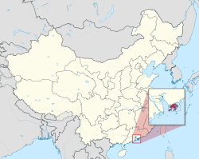

Hong Kong
Hong Kong 香港 | |||||||
|---|---|---|---|---|---|---|---|
| Hong Kong Special Administrative Region of the People's Republic of China Other official names
| |||||||
|  Location of Hong Kong within China | |||||||
| Sovereign state | China | ||||||
| British possession | 26 January 1841 | ||||||
| Treaty of Nanking | 29 August 1842 | ||||||
| Convention of Peking | 24 October 1860 | ||||||
| New Territories lease | 9 June 1898 | ||||||
| Imperial Japanese occupation | 25 December 1941 to 30 August 1945 | ||||||
| Re-designated as a British Dependent Territory | 1 January 1981 | ||||||
| Sino-British Joint Declaration | 19 December 1984 | ||||||
| Handover to China | 1 July 1997 | ||||||
| Administrative centre | Tamar | ||||||
| Largest district by population | Sha Tin | ||||||
| Official languages | |||||||
| Cantonese[a] | |||||||
| Traditional Chinese[b] English alphabet | |||||||
| Ethnic groups (2021) | 91.6% Chinese 2.7% Filipino 1.9% Indonesian 0.8% White 0.6% Indian 0.4% Nepalese 2% other[6] | ||||||
| Demonym(s) | Hongkonger Hongkongese | ||||||
| Government | Devolved executive-led government within a unitary one-party state[7] | ||||||
| John Lee | |||||||
| Eric Chan | |||||||
| Andrew Leung | |||||||
| Andrew Cheung | |||||||
| Legislature | Legislative Council | ||||||
| National representation | |||||||
| 36 deputies | |||||||
| 203 delegates[8] | |||||||
| Area | |||||||
• Total | 2,754.97[9] km2 (1,063.70 sq mi) (168th) | ||||||
• Water (%) | 59.70% (1,640.62 km2; 633.45 sq mi)[9] | ||||||
• Land | 1,114.35 km2 (430.25 sq mi)[9] | ||||||
| Highest elevation | 957 m (3,140 ft) | ||||||
| Lowest elevation | 0 m (0 ft) | ||||||
| Population | |||||||
• 2023 estimate | |||||||
• 2021 census | |||||||
• Density | 6,801[12]/km2 (17,614.5/sq mi) (4th) | ||||||
| GDP (PPP) | 2024 estimate | ||||||
• Total | |||||||
• Per capita | |||||||
| GDP (nominal) | 2024 estimate | ||||||
• Total | |||||||
• Per capita | |||||||
| Gini (2021) | medium | ||||||
| HDI (2022) | very high · 4th | ||||||
| Currency | Hong Kong dollar (HK$) (HKD) | ||||||
| Time zone | UTC+08:00 (HKT) | ||||||
| Date format | dd/mm/yyyy yyyy年mm月dd日 | ||||||
| Mains electricity | 220 V–50 Hz | ||||||
| Driving side | left[d] | ||||||
| Calling code | +852 | ||||||
| ISO 3166 code | |||||||
| Internet TLD | |||||||
| Number plate prefixes | None for local vehicles, 粤Z for cross-boundary vehicles | ||||||
{kind=link}
{kind=link}
_(%2Ball_claims_hatched).svg){kind=link}
Hong Kong[e] is a special administrative region of the People's Republic of China. With 7.4 million residents of various nationalities[f] in a 1,104-square-kilometre (426 sq mi) territory, Hong Kong is one of the most densely populated territories in the world.
Hong Kong was established as a colony of the British Empire after the Qing dynasty ceded Hong Kong Island in 1841–1842 as a consequence of losing the First Opium War. The colony expanded to the Kowloon Peninsula in 1860 and was further extended when the United Kingdom obtained a 99-year lease of the New Territories in 1898. Hong Kong was occupied by Japan from 1941 to 1945 during World War II. The territory was handed over from the United Kingdom to China in 1997. Hong Kong maintains separate governing and economic systems from that of mainland China under the principle of one country, two systems.[g]
Originally a sparsely populated area of farming and fishing villages,[18][19] the territory is now one of the world's most significant financial centres and commercial ports. Hong Kong is the world's fourth-ranked global financial centre, ninth-largest exporter, and eighth-largest importer. Its currency, the Hong Kong dollar, is the ninth most traded currency in the world. Home to the seventh-highest number of billionaires of any city in the world, Hong Kong has the largest number of ultra high-net-worth individuals.[20] Although the city has one of the highest per capita incomes in the world, severe income inequality exists among the population. Despite being the city with the most skyscrapers in the world, housing in Hong Kong has been well-documented to experience a chronic persistent shortage.
Hong Kong is a highly developed territory and has a Human Development Index (HDI) of 0.956, ranking fourth in the world and currently the only place in Asia to be in the top 5. The city has the highest life expectancy in the world, and a public transport usage exceeding 90 per cent.
Etymology
| Hong Kong | |||||||||||||||||||||||||||||||||||||||
|---|---|---|---|---|---|---|---|---|---|---|---|---|---|---|---|---|---|---|---|---|---|---|---|---|---|---|---|---|---|---|---|---|---|---|---|---|---|---|---|
"Hong Kong" in Chinese characters | |||||||||||||||||||||||||||||||||||||||
| Chinese | 香港 | ||||||||||||||||||||||||||||||||||||||
| Jyutping | hoeng1 gong2 | ||||||||||||||||||||||||||||||||||||||
| Cantonese Yale |
| ||||||||||||||||||||||||||||||||||||||
| Literal meaning | "Fragrant Harbour"[21][22] | ||||||||||||||||||||||||||||||||||||||
| |||||||||||||||||||||||||||||||||||||||
| Hong Kong Special Administrative Region | |||||||||||||||||||||||||||||||||||||||
| Traditional Chinese |
| ||||||||||||||||||||||||||||||||||||||
| Simplified Chinese |
| ||||||||||||||||||||||||||||||||||||||
| Jyutping |
| ||||||||||||||||||||||||||||||||||||||
| Cantonese Yale |
| ||||||||||||||||||||||||||||||||||||||
| |||||||||||||||||||||||||||||||||||||||
{kind=link}
The name of the territory, first romanised as "He-Ong-Kong" in 1780,[23] originally referred to a small inlet located between Aberdeen Island and the southern coast of Hong Kong Island. Aberdeen was an initial point of contact between British sailors and local fishermen.[24] Although the source of the romanised name is unknown, it is generally believed to be an early phonetic rendering of the Cantonese (or Tanka Cantonese) phrase hēung góng. The name translates as "fragrant harbour" or "incense harbour".[21][22][25] "Fragrant" may refer to the sweet taste of the harbour's freshwater influx from the Pearl River or to the odour from incense factories lining the coast of northern Kowloon. The incense was stored near Aberdeen Harbour for export before Victoria Harbour was developed.[25] Sir John Davis (the second colonial governor) offered an alternative origin; Davis said that the name derived from "Hoong-keang" ("red torrent"), reflecting the colour of soil over which a waterfall on the island flowed.[26]
The simplified name Hong Kong was frequently used by 1810.[27] The name was also commonly written as the single word Hongkong until 1926, when the government officially adopted the two-word name.[28] Some corporations founded during the early colonial era still keep this name, including Hongkong Land, Hongkong Electric Company, Hongkong and Shanghai Hotels and the Hongkong and Shanghai Banking Corporation (HSBC).[29][30]
History
Prehistory and Imperial China
Earliest known human traces in what is now Hong Kong are dated by some to 35,000 and 39,000 years ago during the Paleolithic period. The claim is based on an archaeological investigation in Wong Tei Tung, Sai Kung in 2003. The archaeological works revealed knapped stone tools from deposits that were dated using optical luminescence dating.[31]
During the Middle Neolithic period, about 6,000 years ago, the region had been widely occupied by humans.[32] Neolithic to Bronze Age Hong Kong settlers were semi-coastal people. Early inhabitants are believed to be Austronesians in the Middle Neolithic period and later the Yue people.[32] As hinted by the archaeological works in Sha Ha, Sai Kung, rice cultivation had been introduced since Late Neolithic period.[33] Bronze Age Hong Kong featured coarse pottery, hard pottery, quartz and stone jewelry, as well as small bronze implements.[32]
{kind=link}
The Qin dynasty incorporated the Hong Kong area into China for the first time in 214 BCE, after conquering the indigenous Baiyue.[34] The region was consolidated under the Nanyue kingdom (a predecessor state of Vietnam) after the Qin collapse[35] and recaptured by China after the Han conquest.[36] During the Mongol conquest of China in the 13th century, the Southern Song court was briefly located in modern-day Kowloon City (the Sung Wong Toi site) before its final defeat in the 1279 Battle of Yamen by the Yuan Dynasty.[37] By the end of the Yuan dynasty, seven large families had settled in the region and owned most of the land. Settlers from nearby provinces migrated to Kowloon throughout the Ming dynasty.[38]
The earliest European visitor was Portuguese explorer Jorge Álvares, who arrived in 1513.[39][40] Portuguese merchants established a trading post called Tamão in Hong Kong waters and began regular trade with southern China. Although the traders were expelled after military clashes in the 1520s,[41] Portuguese-Chinese trade relations were re-established by 1549. Portugal acquired a permanent lease for Macau in 1557.[42]
After the Qing conquest, maritime trade was banned under the Haijin policies. From 1661 to 1683, the population of most of the area forming present day Hong Kong was cleared under the Great Clearance, turning the region into a wasteland.[43] The Kangxi Emperor lifted the maritime trade prohibition, allowing foreigners to enter Chinese ports in 1684.[44] Qing authorities established the Canton System in 1757 to regulate trade more strictly, restricting non-Russian ships to the port of Canton.[45] Although European demand for Chinese commodities like tea, silk, and porcelain was high, Chinese interest in European manufactured goods was insignificant, so that Chinese goods could only be bought with precious metals. To reduce the trade imbalance, the British sold large amounts of Indian opium to China. Faced with a drug crisis, Qing officials pursued ever more aggressive actions to halt the opium trade.[46]
British colony
{kind=link}
In 1839, the Daoguang Emperor rejected proposals to legalise and tax opium and ordered imperial commissioner Lin Zexu to eradicate the opium trade. The commissioner destroyed opium stockpiles and halted all foreign trade,[47] triggering a British military response and the First Opium War. The Qing surrendered early in the war and ceded Hong Kong Island in the Convention of Chuenpi. British forces began controlling Hong Kong shortly after the signing of the convention, from 26 January 1841.[48] However, both countries were dissatisfied and did not ratify the agreement.[49] After more than a year of further hostilities, Hong Kong Island was formally ceded to the United Kingdom in the 1842 Treaty of Nanking.[50]
Administrative infrastructure was quickly built by early 1842, but piracy, disease, and hostile Qing policies initially prevented the government from attracting commerce. Conditions on the island improved during the Taiping Rebellion in the 1850s, when many Chinese refugees, including wealthy merchants, fled mainland turbulence and settled in the colony.[18] Further tensions between the British and Qing over the opium trade escalated into the Second Opium War. The Qing were again defeated and forced to give up Kowloon Peninsula and Stonecutters Island in the Convention of Peking.[51] By the end of this war, Hong Kong had evolved from a transient colonial outpost into a major entrepôt. Rapid economic improvement during the 1850s attracted foreign investment, as potential stakeholders became more confident in Hong Kong's future.[52]
The colony was further expanded in 1898 when the United Kingdom obtained a 99-year lease of the New Territories.[53] The University of Hong Kong was established in 1911 as the territory's first institution of higher education.[54] Kai Tak Airport began operation in 1924, and the colony avoided a prolonged economic downturn after the 1925–26 Canton–Hong Kong strike.[55][56] At the start of the Second Sino-Japanese War in 1937, Governor Geoffry Northcote declared Hong Kong a neutral zone to safeguard its status as a free port.[57] The colonial government prepared for a possible attack, evacuating all British women and children in 1940.[58] The Imperial Japanese Army attacked Hong Kong on 8 December 1941, the same morning as its attack on Pearl Harbor.[59] Hong Kong was occupied by Japan for almost four years before the British resumed control on 30 August 1945.[60]
.svg){kind=link}
.jpg){kind=link}
Its population rebounded quickly after the war, as skilled Chinese migrants fled from the Chinese Civil War and more refugees crossed the border when the Chinese Communist Party took control of mainland China in 1949.[61] Hong Kong became the first of the Four Asian Tiger economies to industrialise during the 1950s.[62] With a rapidly increasing population, the colonial government attempted reforms to improve infrastructure and public services. The public-housing estate programme, Independent Commission Against Corruption, and Mass Transit Railway were all established during the post-war decades to provide safer housing, integrity in the civil service, and more reliable transportation.[63][64]
Nevertheless, widespread public discontent resulted in multiple protests from the 1950s to 1980s, including pro-Republic of China and pro-Chinese Communist Party protests. In the 1967 Hong Kong riots, pro-PRC protestors clashed with the British colonial government. As many as 51 were killed and 802 were injured in the violence, including dozens killed by the Royal Hong Kong Police via beatings and shootings.[65]
Although the territory's competitiveness in manufacturing gradually declined because of rising labour and property costs, it transitioned to a service-based economy. By the early 1990s, Hong Kong had established itself as a global financial centre and shipping hub.[66]
Chinese special administrative region
.jpg){kind=link}
The colony faced an uncertain future as the end of the New Territories lease approached, and Governor Murray MacLehose raised the question of Hong Kong's status with Deng Xiaoping in 1979.[67] Diplomatic negotiations with China resulted in the 1984 Sino-British Joint Declaration, in which the United Kingdom agreed the handover of the colony in 1997 and China would guarantee Hong Kong's economic and political systems for 50 years after the handover.[68] The impending handover triggered a wave of mass emigration as residents feared an erosion of civil rights, the rule of law, and quality of life.[69] Over half a million people left the territory during the peak migration period, from 1987 to 1996.[70] The Legislative Council became a fully elected legislature for the first time in 1995 and extensively expanded its functions and organisations throughout the last years of the colonial rule.[71] The handover of Hong Kong to China was at midnight on 1 July 1997, after 156 years of British rule.[72]
Immediately after the handover, Hong Kong was severely affected by several crises. The Hong Kong government was forced to use substantial foreign exchange reserves to maintain the Hong Kong dollar's currency peg during the 1997 Asian financial crisis,[61] and the recovery from this was muted by an H5N1 avian-flu outbreak[73] and a housing surplus.[74] This was followed by the 2003 SARS epidemic, during which the territory experienced its most serious economic downturn.[75]
Chinese communists portrayed the return of Hong Kong as key moment in the PRC's rise to great power status.[76]: 51
.jpg){kind=link}
Political debates after the handover have centred around the region's democratic development and the Chinese central government's adherence to the "one country, two systems" principle. After reversal of the last colonial era Legislative Council democratic reforms following the handover,[77] the regional government unsuccessfully attempted to enact national security legislation pursuant to Article 23 of the Basic Law.[78] The central government decision to implement nominee pre-screening before allowing chief executive elections triggered a series of protests in 2014 which became known as the Umbrella Revolution.[79] Discrepancies in the electoral registry and disqualification of elected legislators after the 2016 Legislative Council elections[80][81][82] and enforcement of national law in the West Kowloon high-speed railway station raised further concerns about the region's autonomy.[83] In June 2019, mass protests erupted in response to a proposed extradition amendment bill permitting the extradition of fugitives to mainland China. The protests are the largest in Hong Kong's history,[84] with organisers claiming to have attracted more than three million Hong Kong residents.
The Hong Kong regional government and Chinese central government responded to the protests with a number of administrative measures to quell dissent. In June 2020, the Legislative Council passed the National Anthem Ordinance, which criminalised "insults to the national anthem of China".[85] The Chinese central government meanwhile enacted the Hong Kong national security law to help quell protests in the region.[86] Nine months later, in March 2021, the Chinese central government introduced amendments to Hong Kong's electoral system, which included the reduction of directly elected seats in the Legislative Council and the requirement that all candidates be vetted and approved by a Beijing-appointed Candidate Eligibility Review Committee.[87]
In May 2023, the Legislative Council also introduced legislation to reduce the number of directly elected seats in the district councils, and a District Council Eligibility Review Committee was similarly established to vet candidates.[88][89][90]
Government and politics
{kind=link}
Hong Kong is a special administrative region of China, with executive, legislative, and judicial powers devolved from the national government.[91] The Sino-British Joint Declaration provided for economic and administrative continuity through the handover,[68] resulting in an executive-led governing system largely inherited from the territory's history as a British colony.[92] Under these terms and the "one country, two systems" principle, the Basic Law of Hong Kong is the regional constitution.[93] The regional government is composed of three branches:
- Executive: The Chief Executive is responsible for enforcing regional law,[92] can force reconsideration of legislation,[94] and appoints Executive Council members and principal officials.[95] Acting with the Executive Council, the Chief Executive-in-Council can propose new bills, issue subordinate legislation, and has authority to dissolve the legislature.[96] In states of emergency or public danger, the Chief Executive-in-Council is further empowered to enact any regulation necessary to restore public order.[97]
- Legislature: The unicameral Legislative Council enacts regional law, approves budgets, and has the power to impeach a sitting chief executive.[98]
- Judiciary: The Court of Final Appeal and lower courts interpret laws and overturn those inconsistent with the Basic Law.[99] Judges are appointed by the chief executive on the advice of a recommendation commission.[100]
The chief executive is the head of government and serves for a maximum of two five-year terms. The State Council (led by the Premier of China) appoints the chief executive after nomination by the Election Committee, which is composed of 1500 business, community, and government leaders.[101][102][103]
The Legislative Council has 90 members, each serving a four-year term. Twenty are directly elected from geographical constituencies, thirty-five represent functional constituencies (FC), and forty are chosen by an election committee consisting of representatives appointed by the Chinese central government.[104] Thirty FC councillors are selected from limited electorates representing sectors of the economy or special interest groups,[105] and the remaining five members are nominated from sitting district council members and selected in region-wide double direct elections.[106] All popularly elected members are chosen by proportional representation. The 30 limited electorate functional constituencies fill their seats using first-past-the-post or instant-runoff voting.[105]
Twenty-two political parties had representatives elected to the Legislative Council in the 2016 election.[107] These parties have aligned themselves into three ideological groups: the pro-Beijing camp (the current government), the pro-democracy camp, and localist groups.[108] The Chinese Communist Party does not have an official political presence in Hong Kong, and its members do not run in local elections.[109] Hong Kong is represented in the National People's Congress by 36 deputies chosen through an electoral college and 203 delegates in the Chinese People's Political Consultative Conference appointed by the central government.[8]
{kind=link}
Chinese national law does not generally apply in the region, and Hong Kong is treated as a separate jurisdiction.[99] Its judicial system is based on common law, continuing the legal tradition established during British rule.[110] Local courts may refer to precedents set in English law and overseas jurisprudence.[111] However, mainland criminal procedure law applies to cases investigated by the Office for Safeguarding National Security of the CPG in the HKSAR.[112] Interpretative and amending power over the Basic Law and jurisdiction over acts of state lie with the central authority, making regional courts ultimately subordinate to the mainland's socialist civil law system.[113] Decisions made by the Standing Committee of the National People's Congress override any territorial judicial process.[114] Furthermore, in circumstances where the Standing Committee declares a state of emergency in Hong Kong, the State Council may enforce national law in the region.[115]
The territory's jurisdictional independence is most apparent in its immigration and taxation policies. The Immigration Department issues passports for permanent residents which differ from those of the mainland or Macau,[116] and the region maintains a regulated border with the rest of the country. All travellers between Hong Kong and China and Macau must pass through border controls, regardless of nationality.[117] Mainland Chinese citizens do not have right of abode in Hong Kong and are subject to immigration controls.[118] Public finances are handled separately from the national government; taxes levied in Hong Kong do not fund the central authority.[119][120]
The Hong Kong Garrison of the People's Liberation Army is responsible for the region's defence.[121] Although the Chairman of the Central Military Commission is supreme commander of the armed forces,[122] the regional government may request assistance from the garrison.[123] Hong Kong residents are not required to perform military service, and current law has no provision for local enlistment, so its defence is composed entirely of non-Hongkongers.[124]
The central government and Ministry of Foreign Affairs handle diplomatic matters, but Hong Kong retains the ability to maintain separate economic and cultural relations with foreign nations.[125] The territory actively participates in the World Trade Organization, the Asia-Pacific Economic Cooperation forum, the International Olympic Committee, and many United Nations agencies.[126][127][128] The regional government maintains trade offices in Greater China and other nations.[129]
The imposition of the Hong Kong national security law by the central government in Beijing in June 2020 resulted in the suspension of bilateral extradition treaties by the United Kingdom, Canada, Australia, New Zealand, Finland, and Ireland.[130] The United States ended its preferential economic and trade treatment of Hong Kong in July 2020 because it was no longer able to distinguish Hong Kong as a separate entity from the People's Republic of China.[130][131] In 2024, the Safeguarding National Security Ordinance was passed by the Legislative Council to grant officials "even more powers to crack down on opposition to Beijing and the Hong Kong government" and includes penalties such as life imprisonment for political crimes such as treason and insurrection. Critics state that this expansion "will strike a lasting blow to the partial autonomy the city had been promised by China."[132]
Administrative divisions
The territory is divided into 18 districts, each represented by a district council. These advise the government on local issues such as public facility provisioning, community programme maintenance, cultural promotion, and environmental policy. As of 2019,[update] there are a total of 479 district council seats, 452 of which are directly elected.[133] Rural committee chairmen, representing outlying villages and towns, fill the 27 non-elected seats.[134] In May 2023, the government proposed reforms to the District Council electoral system which further cut the number of directly elected seats from 452 to 88, and total seats from 479 to 470. A requirement that district council candidates be vetted and approved by the District Council Eligibility Review Committee was also proposed. The Legislative Council approved the reforms in July 2023.[88][89][90]
Political reforms and sociopolitical issues
{kind=link}
Hong Kong is governed by a hybrid regime that is not fully representative of the population. Legislative Council members elected by functional constituencies composed of professional and special interest groups are accountable to these narrow corporate electorates and not the general public. This electoral arrangement has guaranteed a pro-establishment majority in the legislature since the handover. Similarly, the chief executive is selected by establishment politicians and corporate members of the Election Committee rather than directly elected.[135] Despite universal suffrage being established as ultimate goals for the election of the chief executive and all members of the Legislative Council in Articles 45 and 68 of the basic law,[136] the legislature is only partially directly elected, and the executive continues to be nominated by an unrepresentative body.[135] The government has been repeatedly petitioned to introduce direct elections for these positions.[137][138]
Ethnic minorities (except those of European ancestry) have marginal representation in government and often experience discrimination in housing, education, and employment.[139][140] Employment vacancies and public service appointments frequently have language requirements which minority job seekers do not meet, and language education resources remain inadequate for Chinese learners.[141][142] Foreign domestic helpers, mostly women from the Philippines and Indonesia, have little protection under regional law.[143] Although they live and work in Hong Kong, these workers are not treated as ordinary residents and do not have the right of abode in the territory.[144] Sex trafficking is also an issue,[145] local, mainland Chinese, and foreign women have been trafficked for sex in brothels, homes, and businesses in the city.[146][147]
The Joint Declaration guarantees the Basic Law of Hong Kong for 50 years after the handover.[68] It does not specify how Hong Kong will be governed after 2047, and the central government's role in determining the territory's future system of government is the subject of political debate and speculation. Hong Kong's political and judicial systems may be integrated with China's at that time, or the territory may continue to be administered separately.[148][149] However, in response to large-scale protests in 2019 and 2020, the Standing Committee of the National People's Congress passed the controversial Hong Kong national security law.[150] The law criminalises secession, subversion, terrorism and collusion with foreign elements and establishes the Office for Safeguarding National Security of the CPG in the HKSAR, an investigative office under Central People's Government authority immune from HKSAR jurisdiction. Some of the aforementioned acts were previously considered protected speech under Hong Kong law.[112][151] The United Kingdom considers the law to be a serious violation of the Joint Declaration.[152] In October 2020, the Hong Kong Police arrested seven pro-democracy politicians over tussles with pro-Beijing politicians in the Legislative Council in May. They were charged with contempt and interfering with members of the council, while none of the pro-Beijing lawmakers were detained.[153] Annual commemorations of the 1989 Tiananmen Square protests and massacre were also cancelled amidst fears of violating the national security law.[154] In March 2021, the Chinese central government unilaterally changed Hong Kong's electoral system and established the Candidate Eligibility Review Committee, which would be tasked with screening and evaluating political candidates for their "patriotism".[87]
Geography
{kind=link}
Hong Kong is on China's southern coast, 60 km (37 mi) east of Macau, on the east side of the mouth of the Pearl River estuary. It is surrounded by the South China Sea on all sides except the north, which neighbours the Guangdong city of Shenzhen along the Sham Chun River. The territory's 1,110.18 km2 (428.64 sq mi)[155] area (2,754.97 km2[155] if the maritime area is included) consists of Hong Kong Island, the Kowloon Peninsula, the New Territories, Lantau Island, and over 200 other islands. Of the total area, 1,073 km2 (414 sq mi) is land and 35 km2 (14 sq mi) is water.[156] The territory's highest point is Tai Mo Shan, 957 metres (3,140 ft) above sea level.[157] Urban development is concentrated on the Kowloon Peninsula, Hong Kong Island, and in new towns throughout the New Territories.[158] Much of this is built on reclaimed land; 70 km2 (27 sq mi) (6% of the total land or about 25% of developed space in the territory) is reclaimed from the sea.[159]
Undeveloped terrain is hilly to mountainous, with very little flat land, and consists mostly of grassland, woodland, shrubland, or farmland.[160][161] About 40% of the remaining land area is country parks and nature reserves.[162] The territory has a diverse ecosystem; over 3,000 species of vascular plants occur in the region (300 of which are native to Hong Kong), and thousands of insect, avian, and marine species.[163][164]
Climate
Hong Kong has a humid subtropical climate (Köppen Cwa), characteristic of southern China, despite being located south of the Tropic of Cancer, although closely bordering on a tropical climate. Summers are long, hot and humid, with occasional showers and thunderstorms and warm air from the southwest. The humid nature of Hong Kong exacerbates the warmth of summer. Typhoons occur most often then, sometimes resulting in floods or landslides. Winters are short, mild and usually sunny at the beginning, becoming cloudy towards February. Frequent cold fronts bring strong, cooling winds from the north and occasionally result in chilly weather. Autumn is the sunniest season, whilst spring is generally cloudy.[165] Snowfall has been extremely rare in Hong Kong; the last reported instance was on Tai Mo Shan in 1975.[166] Hong Kong averages 1,709 hours of sunshine per year.[167] Historic temperature extremes at the Hong Kong Observatory are 36.6 °C (97.9 °F) on 22 August 2017 and 0.0 °C (32.0 °F) on 18 January 1893.[168] The highest and lowest recorded temperatures in all of Hong Kong are 39.0 °C (102 °F) at Wetland Park on 22 August 2017,[169] and −6.0 °C (21.2 °F) at Tai Mo Shan on 24 January 2016.[170]
| Climate data for Hong Kong (Hong Kong Observatory), normals 1991–2020,[h] extremes 1884–1939 and 1947–present | |||||||||||||
|---|---|---|---|---|---|---|---|---|---|---|---|---|---|
| Month | Jan | Feb | Mar | Apr | May | Jun | Jul | Aug | Sep | Oct | Nov | Dec | Year |
| Record high °C (°F) | 26.9 (80.4) |
28.3 (82.9) |
31.5 (88.7) |
33.4 (92.1) |
36.1 (97.0) |
35.6 (96.1) |
36.1 (97.0) |
36.6 (97.9) |
35.9 (96.6) |
34.6 (94.3) |
31.8 (89.2) |
28.7 (83.7) |
36.6 (97.9) |
| Mean maximum °C (°F) | 24.0 (75.2) |
25.1 (77.2) |
27.5 (81.5) |
30.2 (86.4) |
32.3 (90.1) |
33.6 (92.5) |
34.1 (93.4) |
34.2 (93.6) |
33.4 (92.1) |
31.3 (88.3) |
28.4 (83.1) |
25.1 (77.2) |
34.7 (94.5) |
| Mean daily maximum °C (°F) | 18.7 (65.7) |
19.4 (66.9) |
21.9 (71.4) |
25.6 (78.1) |
28.8 (83.8) |
30.7 (87.3) |
31.6 (88.9) |
31.3 (88.3) |
30.5 (86.9) |
28.1 (82.6) |
24.5 (76.1) |
20.4 (68.7) |
26.0 (78.8) |
| Daily mean °C (°F) | 16.5 (61.7) |
17.1 (62.8) |
19.5 (67.1) |
23.0 (73.4) |
26.3 (79.3) |
28.3 (82.9) |
28.9 (84.0) |
28.7 (83.7) |
27.9 (82.2) |
25.7 (78.3) |
22.2 (72.0) |
18.2 (64.8) |
23.5 (74.3) |
| Mean daily minimum °C (°F) | 14.6 (58.3) |
15.3 (59.5) |
17.6 (63.7) |
21.1 (70.0) |
24.5 (76.1) |
26.5 (79.7) |
26.9 (80.4) |
26.7 (80.1) |
26.1 (79.0) |
23.9 (75.0) |
20.3 (68.5) |
16.2 (61.2) |
21.6 (70.9) |
| Mean minimum °C (°F) | 9.1 (48.4) |
10.2 (50.4) |
12.2 (54.0) |
16.3 (61.3) |
20.7 (69.3) |
23.6 (74.5) |
24.2 (75.6) |
24.3 (75.7) |
23.5 (74.3) |
20.1 (68.2) |
15.3 (59.5) |
10.1 (50.2) |
7.8 (46.0) |
| Record low °C (°F) | 0.0 (32.0) |
2.4 (36.3) |
4.8 (40.6) |
9.9 (49.8) |
15.4 (59.7) |
19.2 (66.6) |
21.7 (71.1) |
21.6 (70.9) |
18.4 (65.1) |
13.5 (56.3) |
6.5 (43.7) |
4.3 (39.7) |
0.0 (32.0) |
| Average rainfall mm (inches) | 33.2 (1.31) |
38.9 (1.53) |
75.3 (2.96) |
153.0 (6.02) |
290.6 (11.44) |
491.5 (19.35) |
385.8 (15.19) |
453.2 (17.84) |
321.4 (12.65) |
120.3 (4.74) |
39.3 (1.55) |
28.8 (1.13) |
2,431.2 (95.72) |
| Average rainy days (≥ 0.1 mm) | 5.70 | 7.97 | 10.50 | 11.37 | 15.37 | 19.33 | 18.43 | 17.50 | 14.90 | 7.83 | 5.70 | 5.30 | 139.90 |
| Average relative humidity (%) | 74 | 79 | 82 | 83 | 83 | 82 | 81 | 81 | 78 | 73 | 72 | 70 | 78 |
| Average dew point °C (°F) | 11.7 (53.1) |
13.2 (55.8) |
16.1 (61.0) |
19.7 (67.5) |
23.0 (73.4) |
24.9 (76.8) |
25.2 (77.4) |
25.1 (77.2) |
23.6 (74.5) |
20.2 (68.4) |
16.7 (62.1) |
12.4 (54.3) |
19.3 (66.7) |
| Mean monthly sunshine hours | 145.8 | 101.7 | 100.0 | 113.2 | 138.8 | 144.3 | 197.3 | 182.1 | 174.4 | 197.8 | 172.3 | 161.6 | 1,829.3 |
| Percent possible sunshine | 43 | 32 | 27 | 30 | 34 | 36 | 48 | 46 | 47 | 55 | 52 | 48 | 41 |
| Source: Hong Kong Observatory[171][172][173] | |||||||||||||
Architecture
{kind=link}
Hong Kong has the world's largest number of skyscrapers, with 554 towers taller than 150 metres (490 ft),[174] and the third-largest number of high-rise buildings in the world.[175] The lack of available space restricted development to high-density residential tenements and commercial complexes packed closely together on buildable land.[176] Single-family detached homes are uncommon and generally only found in outlying areas.[177] The International Commerce Centre and Two International Finance Centre are the tallest buildings in Hong Kong and are among the tallest in the Asia-Pacific region.[178] Other distinctive buildings lining the Hong Kong Island skyline include the HSBC Main Building, the anemometer-topped triangular Central Plaza, the circular Hopewell Centre, and the sharp-edged Bank of China Tower.[179][180]
Demand for new construction has contributed to frequent demolition of older buildings, freeing space for modern high-rises.[181] However, many examples of European and Lingnan architecture are still found throughout the territory. Older government buildings are examples of colonial architecture. The 1846 Flagstaff House, the former residence of the Commander of the British forces in Hong Kong, is the oldest Western-style building in Hong Kong.[182] Some buildings, such as the Court of Final Appeal Building and the Hong Kong Observatory retain their original functions, and others have been adapted and reused; the Former Marine Police Headquarters was redeveloped into a commercial and retail complex,[183] and Béthanie (built in 1875 as a sanatorium) houses the Hong Kong Academy for Performing Arts.[184] The Tin Hau Temple, dedicated to the sea goddess Mazu (originally built in 1012 and rebuilt in 1266), is the territory's oldest existing structure.[185] The Ping Shan Heritage Trail has architectural examples of several imperial Chinese dynasties, including the Tsui Sing Lau Pagoda (Hong Kong's only remaining pagoda).[186]
Tong lau, mixed-use tenement buildings constructed during the colonial era, blended southern Chinese architectural styles with European influences. These were especially prolific during the immediate post-war period, when many were rapidly built to house large numbers of Chinese migrants.[187] Examples include Lui Seng Chun, the Blue House in Wan Chai, and the Shanghai Street shophouses in Mong Kok. Mass-produced public-housing estates, built since the 1960s, are mainly constructed in modernist style.[188]
{kind=link}
{kind=link}
Demographics
| Cause of Death | 2001 | 2011 | 2021 |
|---|---|---|---|
| 1. Malignant neoplasms | 169.9 | 187.2 | 203.8 |
| 2. Pneumonia | 45.1 | 87.8 | 132.6 |
| 3. Diseases of heart | 70 | 89.6 | 89 |
| 4. Cerebrovascular | 46.6 | 47.2 | 42.2 |
| 5. External causes of morbidity and mortality |
27.5 | 22.2 | 26.7 |
| 6. Nephritis, nephrotic syndrome and nephrosis |
15.7 | 21.8 | 24 |
| 7. Dementia | 3.8 | 10.6 | 20.2 |
| 8. Septicaemia | 6.3 | 10.8 | 16.8 |
| 9. Chronic lower respiratory diseases |
31.5 | 27.8 | 14.3 |
| 10. Diabetes mellitus | 10.1 | 6.5 | 7.4 |
| All other causes | 69.7 | 85 | 118.1 |
| All causes | 496 | 596.6 | 695.2 |
{kind=link}
The Census and Statistics Department estimated Hong Kong's population at 7,413,070 in 2021. The overwhelming majority (91.6%) is Han Chinese,[6] most of whom are Taishanese, Teochew, Hakka, and other Cantonese peoples.[190][191][192] The remaining 8.4% are non-ethnic Chinese minorities, primarily Filipinos, Indonesians, and South Asians.[6][193] However, most Filipinos and Indonesians in Hong Kong are short-term workers. According to a 2021 thematic report by the Hong Kong government, after excluding foreign domestic helpers, the real number of non-Chinese ethnic minorities in the city was 301,344, or 4% of Hong Kong's population.[194] About half the population have some form of British nationality, a legacy of colonial rule; 3.4 million residents have British National (Overseas) status, and 260,000 British citizens live in the territory.[195] The vast majority also hold Chinese nationality, automatically granted to all ethnic Chinese residents at the handover.[196] Headline population density exceeds 7,060 people/km2, and is the fourth-highest in the world.[197]
The predominant language is Cantonese, a variety of Chinese originating in Guangdong. It is spoken by 93.7% of the population, 88.2% as a first language and 5.5% as a second language.[3] Slightly over half the population (58.7%) speaks English, the other official language;[2] 4.6% are native speakers, and 54.1% speak English as a second language.[3] Code-switching, mixing English and Cantonese in informal conversation, is common among the bilingual population.[198] Post-handover governments have promoted Mandarin, which is currently about as prevalent as English; 54.2% of the population speak Mandarin, with 2.3% native speakers and 51.9% as a second language.[3] Traditional Chinese characters are used in writing, rather than the simplified characters used in the mainland.[199]
.jpg){kind=link}
Among the religious population, the traditional "three teachings" of China, Buddhism, Confucianism, and Taoism, have the most adherents (20%), followed by Christianity (12%) and Islam (4%).[200] Followers of other religions, including Sikhism, Hinduism, and Judaism, generally originate from regions where their religion predominates.[200]
Life expectancy in Hong Kong was 81.3 years for males and 87.2 years for females in 2022, one of the highest in the world.[201][202] Cancer, pneumonia, heart disease, cerebrovascular disease, and accidents are the territory's five leading causes of death.[203] The universal public healthcare system is funded by general-tax revenue, and treatment is highly subsidised; on average, 95% of healthcare costs are covered by the government.[204]
The city has a severe amount of income inequality,[205] which has risen since the handover, as the region's ageing population has gradually added to the number of nonworking people.[206] Although median household income steadily increased during the decade to 2021, the wage gap remained high;[207] the 90th percentile of earners receive 41% of all income.[207] The city has the most billionaires per capita, with one billionaire per 109,657 people,[208] as well as the second-highest number of billionaires of any city in the world,[209] the highest number of billionaires of any city in Asia, and the largest concentration of ultra high-net-worth individuals of any city in the world.[210][211] Despite government efforts to reduce the growing disparity,[212] median income for the top 10% of earners is 57 times that of the bottom 10%.[213][214]
Economy
{kind=link}
One of the world's most significant financial centres and commercial ports,[215] Hong Kong has a market economy focused on services, characterised by low taxation, minimal government market intervention, and an established international financial market.[216] It is the world's 38th-largest economy, with a nominal GDP of approximately US$407 billion.[13] Hong Kong's economy ranked at the top of the Heritage Foundation's economic freedom index between 1995 and 2021.[217][218] However, Hong Kong was removed from the index by the Heritage Foundation in 2021, with the Foundation citing a "loss of political freedom and autonomy ... [making Hong Kong] almost indistinguishable in many respects from other major Chinese commercial centers like Shanghai and Beijing".[219] Hong Kong is highly developed, and ranks fourth on the UN Human Development Index.[156] The Hong Kong Stock Exchange is the seventh-largest in the world, with a market capitalisation of HK$30.4 trillion (US$3.87 trillion) as of December 2018[update].[220] Hong Kong is ranked as the 17th most innovative territory in the Global Innovation Index in 2023,[221] and 3rd in the Global Financial Centres Index.[222] The city is sometimes referred to as "Silicon Harbor",[223] a nickname derived from Silicon Valley in California. Hong Kong hosts several high tech and innovation companies,[224] including several multinational companies.[225][226]
Hong Kong is the ninth largest trading entity in exports and eighth largest in imports (2021),[227][228] trading more goods in value than its gross domestic product.[227][228] Over half of its cargo throughput consists of transshipments (goods travelling through Hong Kong). Products from mainland China account for about 40% of that traffic.[229] The city's location allowed it to establish a transportation and logistics infrastructure which includes the world's seventh-busiest container port[230] and the busiest airport for international cargo.[231] The territory's largest export markets are mainland China and the United States.[156] Hong Kong is a key part of the 21st Century Maritime Silk Road.[232] It has little arable land and few natural resources, importing most of its food and raw materials. More than 90% of Hong Kong's food is imported, including nearly all of its meat and rice.[233] Agricultural activity is 0.1% of GDP and consists of growing premium food and flower varieties.[234]
Although the territory had one of Asia's largest manufacturing economies during the latter half of the colonial era, Hong Kong's economy is now dominated by the service sector. The sector generates 92.7% of economic output, with the public sector accounting for about 10%.[235] Between 1961 and 1997 Hong Kong's gross domestic product increased by a factor of 180, and per capita GDP increased by a factor of 87.[236][237] The territory's GDP relative to mainland China's peaked at 27% in 1993; it fell to less than 3% in 2017, as the mainland developed and liberalised its economy.[238] Economic and infrastructure integration with China has increased significantly since the 1978 start of market liberalisation on the mainland. Since resumption of cross-boundary train service in 1979, many rail and road links have been improved and constructed, facilitating trade between regions.[239][240] The Closer Economic Partnership Arrangement formalised a policy of free trade between the two areas, with each jurisdiction pledging to remove remaining obstacles to trade and cross-boundary investment.[241] A similar economic partnership with Macau details the liberalisation of trade between the special administrative regions.[242] Chinese companies have expanded their economic presence in the territory since the handover. Mainland firms represent over half of the Hang Seng Index value, up from 5% in 1997.[243][244]
{kind=link}
As the mainland liberalised its economy, Hong Kong's shipping industry faced intense competition from other Chinese ports. Half of China's trade goods were routed through Hong Kong in 1997, dropping to about 13% by 2015.[245] The territory's minimal taxation, common law system, and civil service attract overseas corporations wishing to establish a presence in Asia.[245] The city has the second-highest number of corporate headquarters in the Asia-Pacific region.[246] Hong Kong is a gateway for foreign direct investment in China, giving investors open access to mainland Chinese markets through direct links with the Shanghai and Shenzhen stock exchanges. The territory was the first market outside mainland China for renminbi-denominated bonds, and is one of the largest hubs for offshore renminbi trading.[247] In November 2020, Hong Kong's Financial Services and the Treasury Bureau proposed a new law that will restrict cryptocurrency trading to professional investors only, leaving amateur traders (93% of Hong Kong's trading population) out of the market.[248] The Hong Kong dollar, the local currency, is the eighth most traded currency in the world.[249] Due to extremely compact house sizes and the extremely high housing density, the city has the most expensive housing market in the world.[250][251][252]
The government has had a passive role in the economy. Colonial governments had little industrial policy and implemented almost no trade controls. Under the doctrine of "positive non-interventionism", post-war administrations deliberately avoided the direct allocation of resources; active intervention was considered detrimental to economic growth.[253] While the economy transitioned to a service basis during the 1980s,[253] late colonial governments introduced interventionist policies. Post-handover administrations continued and expanded these programmes, including export-credit guarantees, a compulsory pension scheme, a minimum wage, anti-discrimination laws, and a state mortgage backer.[254]
Tourism is a major part of the economy, accounting for 5% of GDP.[183] In 2016, 26.6 million visitors contributed HK$258 billion (US$32.9 billion) to the territory, making Hong Kong the 14th most popular destination for international tourists. It is the most popular Chinese city for tourists, receiving over 70% more visitors than its closest competitor (Macau).[255] The city is ranked as one of the most expensive cities for expatriates.[256][257] However, since 2020, there has been a sharp decline in incoming visitors due to tight COVID-19 travel restrictions. Additionally, due to the closure of the Russian airspace in 2022, multiple airlines decided to cease their operations in Hong Kong.[258] In an attempt to attract tourists back to Hong Kong, the Hong Kong government announced plans to give away 500,000 free airline tickets in 2023.[259]
{kind=link}
Infrastructure
Transport
.JPG){kind=link}
Hong Kong has a highly developed, sophisticated transport network. Over 90% of the daily trips made by its residents are made with public transport, the highest percentage in the world.[260] The Octopus card, a contactless smart payment card made for Hong Kong, is widely accepted on railways, trams, buses and ferries, and can be used for payment in most retail stores.[261] Alternative payments such as Apple Pay, AliPay, Mastercard and Visa have also been gradually introduced to public transports.[262][263][264][265][266]
The Peak Tram, Hong Kong's first public transport system, has provided funicular rail transport between Central and Victoria Peak since 1888.[267]
The Central and Western District has an extensive system of escalators and moving pavements, which being the Mid-Levels escalator, the world's longest outdoor covered escalator system.[268]
Hong Kong Tramways’ tram network covers a portion of Hong Kong Island, covering from Kennedy Town to Shau Kei Wan, with a branch to Happy Valley. It operates 6 routes and has had a rideship of 42,558 in 2022.[269][270] It began servicing Hong Kong since 1904.[271] Hong Kong Tramways currently holds the Guinness World Record as the "Largest double-decker tram fleet in service", certified on 30 July 2021, with a fleet of 165 double-decker trams.[272] The fleet of trams were mostly built by Hong Kong Tramways.
The Mass Transit Railway (MTR) is an extensive passenger rail network, connecting 98 metro stations and 68 light-rail stops throughout the territory.[273][274] With a daily ridership of almost five million, the system serves 41% of all public transit passengers in the city[275] and has an on-time rate of 99.9%.[276] Cross-boundary train service to Shenzhen is offered by the East Rail line, and longer-distance inter-city trains to Guangzhou, Shanghai, and Beijing are operated from Hung Hom station.[277] This train service has however been suspended since the outbreak of COVID-19, and officially closed by the State Council on 31 July 2024, as announced by the General Administration of Customs, citing that high-speed passenger trains have effectively met the travel needs of passengers between the mainland and Hong Kong.[278][279][280] Connecting service to the national high-speed rail system is provided at West Kowloon railway station.[281]
Although public transport systems handle most passenger traffic, there are over 500,000 private vehicles registered in Hong Kong.[282] Automobiles drive on the left (unlike in mainland China), because of historical influence of the British Empire.[283] Vehicle traffic is extremely congested in urban areas, exacerbated by limited space to expand roads and an increasing number of vehicles.[284] More than 18,000 taxicabs, easily identifiable by their bright colours and taxi lights, are licensed to carry riders in the territory.[285] Unlicensed ride-hailing services such as Uber also exists in Hong Kong, with some operating with licensed taxis to legitimise their business in ride-sharing. Unlicensed drivers have been targeted by the government and taxi drivers in the past, mainly due to the lack of third-party insurance on passengers and taxi drivers fearing the competition from drivers of these ride-hailing services.[286][287] The government in 2024 has looked into legalising these services.[288]
Bus services operate more than 700 routes across the territory,[275] with smaller public light buses (also known as minibuses) serving areas standard buses do not reach as frequently or directly.[289] Expressways and truck roads, organised with the Hong Kong Strategic Route and Exit Number System, connect all major areas of the territory.[290] The Hong Kong–Zhuhai–Macau Bridge provides a direct route to the western side of the Pearl River estuary.[240]
.jpg){kind=link}
Hong Kong International Airport is the territory's primary airport, replacing Kai Tak International Airport that ended its operation in 1998.[291] Over 100 airlines operate flights from the airport, including locally based Cathay Pacific (flag carrier), Hong Kong Airlines, low-cost airline HK Express and cargo airline Air Hong Kong.[292] It was the eighth-busiest airport by passenger traffic[293] pre-COVID and handles the most air-cargo traffic in the world.[294] Most private recreational aviation traffic flies through Shek Kong Airfield, under the supervision of the Hong Kong Aviation Club.[295]
The Star Ferry operates two lines across Victoria Harbour for its 53,000 daily passengers.[296] Ferries also serve outlying islands inaccessible by other means. Smaller kai-to boats serve the most remote coastal settlements.[297] Ferry travel to Macau and mainland China is also available.[298] Junks, once common in Hong Kong waters, are no longer widely available and are used privately and for tourism.[299] The large size of the port gives Hong Kong the classification of Large-Port Metropolis.[300]
Utilities
Hong Kong generates most of its electricity locally.[301] The vast majority of this energy comes from fossil fuels, with 46% from coal and 47% from petroleum.[302] The rest is from other imports, including nuclear energy generated in mainland China.[303] Renewable sources account for a negligible amount of energy generated for the territory.[304] Small-scale wind-power sources have been developed,[301] and a small number of private homes and public buildings have installed solar panels.[305]
With few natural lakes and rivers, high population density, inaccessible groundwater sources, and extremely seasonal rainfall, the territory does not have a reliable source of freshwater. The Dongjiang River in Guangdong supplies 70% of the city's water,[306] and the remaining demand is filled by harvesting rainwater.[307] Toilets in most built-up areas of the territory flush with seawater, greatly reducing freshwater use.[306]
Broadband Internet access is widely available, with 92.6% of households connected. Connections over fibre-optic infrastructure are increasingly prevalent,[308] contributing to the high regional average connection speed of 21.9 Mbit/s (the world's fourth-fastest).[309] Mobile-phone use is ubiquitous;[310] there are more than 18 million mobile-phone accounts,[311] more than double the territory's population.
Culture
Hong Kong is characterised as a hybrid of East and West. Traditional Chinese values emphasising family and education blend with Western ideals, including economic liberty and the rule of law.[312] Although the vast majority of the population is ethnically Chinese, Hong Kong has developed a distinct identity. The territory diverged from the mainland through its long period of colonial administration and a different pace of economic, social, and cultural development. Mainstream culture was derived from immigrants originating from various parts of China; it was then influenced by British-style education, a separate political system, and the territory's rapid development during the late 20th century.[313][314] Most migrants of that era fled poverty and war, reflected in the prevailing attitude toward wealth; Hongkongers would tend to link self-image and decision-making to material benefits.[315][316] Residents' sense of local identity has increased post-handover: polling in December 2022 had 32% of respondents identifying as "Hongkongers", 34.1% identifying as "Hongkongers in China" 45.9% purporting a "Mixed Identity", 20.5% identifying as "Chinese" and 11.9% identifying as "Chinese in Hong Kong".[317]
Traditional Chinese family values, including family honour, filial piety, and a preference for sons, are prevalent.[318] Nuclear families are the most common households, although multi-generational and extended families are not unusual.[319] Spiritual concepts such as feng shui are observed; large-scale construction projects often hire consultants to ensure proper building positioning and layout. The degree of its adherence to feng shui is believed to determine the success of a business.[179] Bagua mirrors are regularly used to deflect evil spirits,[320] and buildings often lack floor numbers with a 4;[321] the number has a similar sound to the word for "die" in Cantonese.[322]
Cuisine
{kind=link}
{kind=link}
Food in Hong Kong is primarily based on Cantonese cuisine, despite the territory's exposure to foreign influences and its residents' varied origins. Rice is the staple food, and is usually served plain with other dishes.[323] Freshness of ingredients is emphasised. Poultry and seafood are commonly sold live at wet markets, and ingredients are used as quickly as possible.[324] There are five daily meals: breakfast, lunch, afternoon tea, dinner, and siu yeh.[325] Dim sum, as part of yum cha (brunch), is a dining-out tradition with family and friends. Dishes include congee, cha siu bao, siu yuk, egg tarts, and mango pudding. Local versions of Western food are served at cha chaan teng (Hong Kong-style cafes). Common cha chaan teng menu items include macaroni in soup, deep-fried French toast, and Hong Kong-style milk tea.[323]
Cinema
{kind=link}
Hong Kong developed into a filmmaking hub during the late 1940s as a wave of Shanghai filmmakers migrated to the territory, and these movie veterans helped build the colony's entertainment industry over the next decade.[326] By the 1960s, the city was well known to overseas audiences through films such as The World of Suzie Wong.[327] When Bruce Lee's The Way of the Dragon was released in 1972, local productions became popular outside Hong Kong. During the 1980s, films such as A Better Tomorrow, As Tears Go By, and Zu Warriors from the Magic Mountain expanded global interest beyond martial arts films; locally made gangster films, romantic dramas, and supernatural fantasies became popular.[328]
Hong Kong cinema continued to be internationally successful over the following decade with critically acclaimed dramas such as Farewell My Concubine, To Live, and Chungking Express. The city's martial arts film roots are evident in the roles of the most prolific Hong Kong actors. Jackie Chan, Donnie Yen, Jet Li, Chow Yun-fat, and Michelle Yeoh frequently play action-oriented roles in foreign films. Hong Kong films have also grown popular in oversea markets such as Japan, South Korea, and Southeast Asia, earning the city the moniker "Hollywood of the East".[329] At the height of the local movie industry in the early 1990s, over 400 films were produced each year; since then, industry momentum shifted to mainland China. The number of films produced annually has declined to about 60 in 2017.[330]
Music
.jpg){kind=link}
.jpg){kind=link}
Cantopop is a genre of Cantonese popular music which emerged in Hong Kong during the 1970s. Evolving from Shanghai-style shidaiqu, it is also influenced by Cantonese opera and Western pop.[331] Local media featured songs by artists such as Sam Hui, Anita Mui, Leslie Cheung, and Alan Tam; during the 1980s, exported films and shows exposed Cantopop to a global audience.[332] The genre's popularity peaked in the 1990s, when the Four Heavenly Kings dominated Asian record charts.[333] Despite a general decline since late in the decade,[334] Cantopop remains dominant in Hong Kong; contemporary artists such as Eason Chan, Joey Yung, and Twins are popular in and beyond the territory.[335]
Western classical music has historically had a strong presence in Hong Kong and remains a large part of local musical education.[336] The publicly funded Hong Kong Philharmonic Orchestra, the territory's oldest professional symphony orchestra, frequently hosts musicians and conductors from overseas. The Hong Kong Chinese Orchestra, composed of classical Chinese instruments, is the leading Chinese ensemble and plays a significant role in promoting traditional music in the community.[337]
Hong Kong has never had a separate national anthem to the country that controlled it; its current official national anthem is therefore that of the People's Republic of China, March of the Volunteers. The song Glory to Hong Kong has been used by protestors as an unofficial anthem of the city.[338][339]
Sport and recreation
{kind=link}
Despite its small area, the territory is home to a variety of sports and recreational facilities. The city has hosted numerous major sporting events, including the 2009 East Asian Games, the 2008 Summer Olympics equestrian events, and the 2007 Premier League Asia Trophy.[340] The territory regularly hosts the Hong Kong Sevens, Hong Kong Marathon, Hong Kong Tennis Classic and Lunar New Year Cup, and hosted the inaugural AFC Asian Cup and the 1995 Dynasty Cup.[341][342]
Hong Kong represents itself separately from mainland China, with its own sports teams in international competitions.[340] The territory has participated in almost every Summer Olympics since 1952 and has earned nine medals. Lee Lai-shan won the territory's first Olympic gold medal at the 1996 Atlanta Olympics,[343] and Cheung Ka Long won the second one in Tokyo 2020.[344] Hong Kong athletes have won 126 medals at the Paralympic Games and 17 at the Commonwealth Games. No longer part of the Commonwealth of Nations, the city's last appearance in the latter was in 1994.[345]
Dragon boat races originated as a religious ceremony conducted during the annual Tuen Ng Festival. The race was revived as a modern sport as part of the Tourism Board's efforts to promote Hong Kong's image abroad. The first modern competition was organised in 1976, and overseas teams began competing in the first international race in 1993.[346]
The Hong Kong Jockey Club, the territory's largest taxpayer,[347] has a monopoly on gambling and provides over 7% of government revenue.[348] Three forms of gambling are legal in Hong Kong: lotteries, horse racing, and football.[347]
Education
{kind=link}
Education in Hong Kong is largely modelled on that of the United Kingdom, particularly the English system.[349] Children are required to attend school from age 6 until completion of secondary education, generally at age 18.[350][351] At the end of secondary schooling, all students take a public examination and are awarded the Hong Kong Diploma of Secondary Education upon successful completion.[352]
Of residents aged 15 and older, 81% completed lower-secondary education, 66% graduated from an upper secondary school, 32% attended a non-degree tertiary program, and 24% earned a bachelor's degree or higher.[353]
Mandatory education has contributed to an adult literacy rate of 95.7%.[354] The literacy rate is lower than that of other developed economies because of the influx of refugees from mainland China during the post-war colonial era; much of the elderly population were not formally educated because of war and poverty.[355][356]
Comprehensive schools fall under three categories: public schools, which are government-run; subsidised schools, including government aid-and-grant schools; and private schools, often those run by religious organisations and that base admissions on academic merit. These schools are subject to the curriculum guidelines as provided by the Education Bureau. Private schools subsidised under the Direct Subsidy Scheme; international schools fall outside of this system and may elect to use differing curricula and teach using other languages.[351]
Medium of instruction
At primary and secondary school levels, the government maintains a policy of "mother tongue instruction"; most schools use Cantonese as the medium of instruction, with written education in both Chinese and English. Other languages being used as medium of instruction in non-international school education include English and Putonghua (Standard Mandarin Chinese). Secondary schools emphasise "bi-literacy and tri-lingualism", which has encouraged the proliferation of spoken Mandarin language education.[357]
English is the official medium of instruction and assessments for most university programmes in Hong Kong, although use of Cantonese is predominant in informal discussions among local students and professors.[358][359][360][361][362][363]
Tertiary education
{kind=link}
Hong Kong has twelve universities. The University of Hong Kong (HKU) was founded as the city's first institute of higher education during the early colonial period in 1911.[364] The Chinese University of Hong Kong (CUHK) was established in 1963 to fill the need for a university that taught using Chinese as its primary language of instruction.[365] Along with the Hong Kong University of Science and Technology (HKUST) established in 1991, these universities are consistently ranked among the top 50 or top 100 universities worldwide.[366][367][368]
The Hong Kong Polytechnic University (PolyU)[369] and City University of Hong Kong (CityU), both granted university status in 1994, are consistently ranked among the top 100 or top 200 universities worldwide.[366][367][368] The Hong Kong Baptist University (HKBU) was granted university status in 1994[370] and is a liberal arts institution. Hong Kong Metropolitan University (formerly as Open University of Hong Kong prior to 2021) (attaining status in 1997),[371] Lingnan University (in 1999),[372] Hong Kong Shue Yan University (in 2006),[373] Education University of Hong Kong (in 2016), Hang Seng University of Hong Kong (in 2018) and Saint Francis University (in 2024)[374] all attained full university status in subsequent years.
Media
{kind=link}
Most of the newspapers in Hong Kong are written in Chinese but there are also a few English-language newspapers. The major one being the South China Morning Post, with The Standard serving as a business-oriented alternative. A variety of Chinese-language newspapers are published daily; the most prominent are Ming Pao and Oriental Daily News. Local publications are often politically affiliated, with pro-Beijing or pro-democracy sympathies. The central government has a print-media presence in the territory through the state-owned Ta Kung Pao and Wen Wei Po.[375] Several international publications have regional operations in Hong Kong, including The Wall Street Journal, Financial Times, USA Today, Yomiuri Shimbun, and The Nikkei.[376]
Four free-to-air television broadcasters operate in the territory; TVB, HKTVE, Hong Kong Open TV and Phoenix Television air eight digital channels.[377][378] TVB, Hong Kong's dominant television network, has an 80% viewer share.[379] Paid television services operated by PCCW offer hundreds of additional channels and cater to a variety of audiences.[380] RTHK is the public broadcaster, providing seven radio channels and six free-to-air television channels.[381][382][383] Ten non-domestic broadcasters air programming for the territory's foreign population.[377] Access to media and information over the Internet is not subject to mainland Chinese regulations, including the Great Firewall, yet local control applies.[384]
See also
Notes
- ^ a b No specific variety of Chinese is official in the territory. Residents predominantly speak Cantonese, the de facto regional standard.[1][2][3]
- ^ a b For all government use, documents written using Traditional Chinese characters are authoritative over ones inscribed with Simplified Chinese characters.[4] English shares equal status with Chinese in all official proceedings.[5]
- ^ After adjustment for taxes and social transfers
- ^ Except for the Hong Kong-Zhuhai-Macao Bridge Hong Kong Link Road, which drives on the right.[16]
- ^
- US: /ˈhɒŋkɒŋ/ or UK: /hɒŋˈkɒŋ/; Chinese: 香港; Jyutping: Hoeng1 gong2; Cantonese Yale: Hēunggóng, Cantonese: [hœ́ːŋ.kɔ̌ːŋ]
- Officially the Hong Kong Special Administrative Region of the People's Republic of China (abbr. Hong Kong SAR or HKSAR; Chinese: 中華人民共和國香港特別行政區; Cantonese Yale: Hēunggóng Dahkbiht Hàhngjingkēui).
- Legally Hong Kong, China in international treaties and organizations.
- ^ Hong Kong permanent residents can be of any nationality. A person without Chinese nationality who has entered Hong Kong with a valid travel document, has ordinarily resided there for a continuous period not less than seven years, and is permanently domiciled in the territory would be legally recognised as a Hongkonger.[17]
- ^ However, decisions made by the Standing Committee of the National People's Congress override any territorial judicial process. Furthermore, the State Council may enforce national law in the region under specific circumstances.
- ^ Mean monthly maxima and minima (i.e. the expected highest and lowest temperature readings at any point during the year or given month) calculated based on data in Hong Kong from 1991 to 2020.
References
Citations
- ^ Leung 2016.
- ^ a b Official Languages Ordinance.
- ^ a b c d Population By-Census 2021, pp. 31, 51–52
- ^ Legislative Council Disclaimer and Copyright Notice
- ^ Use of Chinese in Court Proceedings 2011
- ^ a b c Population By-Census 2021, p. 46.
- ^ "China (People's Republic of) 1982 (rev. 2004)". Constitute project. Archived from the original on 17 July 2015. Retrieved 25 August 2019.
- ^ a b Cheung 2017.
- ^ a b c "Survey and Mapping Office – Circulars and Publications". Survey and Mapping Office. Archived from the original on 31 March 2023. Retrieved 20 October 2020.
- ^ "Mid-year population for 2023" (Press release). Census and Statistics Department. 15 August 2023. Archived from the original on 15 November 2023. Retrieved 15 November 2023.
- ^ "Key statistics of the 2021 and 2011 Population Census" (PDF). census2021.gov.hk. Archived (PDF) from the original on 13 March 2022. Retrieved 15 March 2022.
- ^ "Main Tables – 2021 Population Census". census2021.gov.hk. Archived from the original on 14 November 2022. Retrieved 15 March 2022.
- ^ a b c d e "World Economic Outlook Database, April 2024 Edition. (HK)". IMF.org. International Monetary Fund. 11 April 2024. Retrieved 2 May 2024.
- ^ Household Income Distribution 2021, p. 5
- ^ "Human Development Report 2023/2024" (PDF). United Nations Development Programme. 13 March 2024. Archived (PDF) from the original on 13 March 2024. Retrieved 13 March 2024.
- ^ Technical Legislative Amendments on Traffic Arrangements for the Hong Kong-Zhuhai-Macao Bridge 2017
- ^ Basic Law Chapter III Article 24.
- ^ a b Carroll 2007, pp. 15–21.
- ^ Ren 2010, p. 221.
- ^ Kirschner, Kylie (10 September 2023). "The top 10 cities around the world with the most ultra-wealthy people". Business Insider. Archived from the original on 15 November 2023. Retrieved 15 November 2023.
- ^ a b "Aquilaria sinensis and origin of the name of Hong Kong". Hong Kong Herbarium. Archived from the original on 1 December 2017. Retrieved 21 November 2017.
- ^ a b Carroll 2007, p. 1
- ^ Empson 1992, p. 94.
- ^ Bishop & Roberts 1997, p. 218.
- ^ a b Room 2005, p. 168.
- ^ Davis 1841, p. 6.
- ^ Empson 1992, p. 96.
- ^ Hong Kong Government Gazette 1926, No. 479.
- ^ HSH Annual Report 2017, p. 6.
- ^ HSBC Annual Report 2011, p. 2.
- ^ Davis, Vin; Ixer, Rob (2009). "The Petrology of the Wong Tei Tung Stone Tool Manufacturing Site, Sham Chung, Hong Kong Sar, China". Internet Archaeology (26). doi:10.11141/ia.26.8. ISSN 1363-5387. Archived from the original on 26 March 2023. Retrieved 8 June 2020.
- ^ a b c Meacham 1999, p. 2.
- ^ Li 2012, p. 38.
- ^ Ban, Ban & Ban 111.
- ^ Keat 2004, p. 932.
- ^ Carroll 2007, p. 9.
- ^ Barber 2004, p. 48.
- ^ Carroll 2007, p. 10.
- ^ Porter 1996, p. 63.
- ^ Edmonds 2002, p. 1.
- ^ von Glahn 1996, p. 116.
- ^ Wills 1998, pp. 342–344.
- ^ "Hong Kong Museum of History: "The Hong Kong Story" Exhibition Materials" (PDF). Archived from the original (PDF) on 18 April 2009.
- ^ Zhihong 2006, pp. 8–9.
- ^ Schottenhammer 2007, p. 33.
- ^ Chen 2011.
- ^ Hoe & Roebuck 1999, pp. 82, 87.
- ^ "Hong Kong 2003 – History". www.yearbook.gov.hk. Archived from the original on 25 October 2018. Retrieved 26 June 2021.
- ^ Tsang 2007, p. 12.
- ^ Courtauld, Holdsworth & Vickers 1997, pp. 38–58
- ^ Carroll 2007, pp. 21–24.
- ^ Carroll 2007, p. 30.
- ^ Scott 1989, p. 6.
- ^ Chu 2005, p. 90.
- ^ Wordie 2007, p. 243.
- ^ Carroll 2007, p. 103.
- ^ Yanne & Heller 2009, p. 71.
- ^ Snow 2003, p. 43.
- ^ Snow 2003, pp. 53–73.
- ^ Kwong 2015.
- ^ a b Wiltshire 1997, p. 148.
- ^ Buckley 1997, pp. 64, 92.
- ^ Carroll 2007, pp. 145, 174–175.
- ^ Forsyth, Neil (Director) (1990). Underground Pride (Motion picture). Hong Kong: MTR Corporation.
- ^ Chu, Yingchi (2003). Hong Kong Cinema: Coloniser, Motherland and Self! Routledge Publishing. ISBN 0-7007-1746-3.
- ^ Dodsworth & Mihaljek 1997, p. 54.
- ^ Carroll 2007, pp. 176–178.
- ^ a b c Carroll 2007, p. 181.
- ^ Wong 1992, p. 9.
- ^ Population Policy Report 2002, pp. 27–28
- ^ Gargan, Edward A. (18 September 1995). "Pro-China Party Appears Big Loser in Hong Kong Election". The New York Times. Archived from the original on 8 May 2021. Retrieved 20 November 2020.
- ^ Gargan 1997.
- ^ Carroll 2007, p. 218
- ^ Cheung & Ho 2013.
- ^ Lee 2006, pp. 63–70.
- ^ Crean, Jeffrey (2024). The Fear of Chinese Power: an International History. New Approaches to International History series. London, UK: Bloomsbury Academic. ISBN 978-1-350-23394-2.
- ^ Carroll 2007, p. 200.
- ^ Carroll 2007, pp. 226, 233.
- ^ Kaiman 2014.
- ^ Bland 2016.
- ^ Haas 2017.
- ^ Huang 2016.
- ^ Siu & Chung 2017.
- ^ "To restore calm in Hong Kong, try democracy", The Economist
- ^ "CE signs National Anthem Ordinance (with photos)". HKSAR Government Press Releases. Archived from the original on 12 June 2020. Retrieved 12 June 2020.
- ^ Regan, Helen (29 June 2020). "China passes sweeping Hong Kong national security law: report". CNN. Archived from the original on 1 July 2020. Retrieved 29 June 2020.
- ^ a b "China approves plan to veto Hong Kong election candidates". France 24. 11 March 2021. Archived from the original on 12 March 2021. Retrieved 6 September 2022.
- ^ a b "Hong Kong cuts directly elected District Council seats as overhaul unanimously approved". Hong Kong Free Press. 6 July 2023.
- ^ a b "Ordinance passed and promulgated" (PDF). Hong Kong Government Gazette. 10 July 2023. Archived (PDF) from the original on 10 July 2023.
- ^ a b "District Councils (Amendment) Ordinance 2023—Ordinance No. 19 of 2023" (PDF). Hong Kong Government Gazette. 10 July 2023. Archived (PDF) from the original on 10 July 2023.
- ^ Tam et al. 2012, p. 80
- ^ a b Tam et al. 2012, pp. 66, 80–81
- ^ Ng Ka Ling and Another v the Director of Immigration
- ^ Tam et al. 2012, p. 77
- ^ Young & Cullen 2010, p. 39.
- ^ Adaptation of Laws Guidelines 1998, p. 7
- ^ Emergency Regulations Ordinance.
- ^ Tam et al. 2012, p. 73
- ^ a b Gittings 2009, p. 150.
- ^ Gittings 2009, p. 153.
- ^ Young & Cullen 2010, pp. 13–16.
- ^ Basic Law Chapter IV Article 45.
- ^ Amendment to the Basic Law Annex I
- ^ "China moves to overhaul Hong Kong politics, squeezing democratic opposition". Reuters. 11 March 2021. Archived from the original on 12 March 2021. Retrieved 6 September 2022.
- ^ a b Guidelines on the Legislative Council Election 2016, pp. 3–4
- ^ Guidelines on the Legislative Council Election 2016, pp. 3, 52–53
- ^ LegCo and DC Member Political Affiliations 2017
- ^ Bush & Whelan-Wuest 2017.
- ^ Sala 2016.
- ^ Tam et al. 2012, pp. 80–81
- ^ Gittings 2009, p. 148.
- ^ a b "Legislation Summary: Hong Kong National Security Law". NPC Observer. 30 June 2020. Archived from the original on 2 July 2020. Retrieved 2 July 2020.
- ^ Jordan 1997, p. 335.
- ^ Chief Executive of the Hong Kong Special Administrative Region and Another v the President of the Legislative Council
- ^ Basic Law Chapter II Article 18.
- ^ Hong Kong Special Administrative Region Passports Ordinance
- ^ "Control Point Locations". Immigration Department. Archived from the original on 22 November 2017. Retrieved 18 November 2017.
- ^ Basic Law Chapter II Article 22.
- ^ Basic Law Chapter V Article 106.
- ^ Public Finance Facts 2018.
- ^ Lendon 2017.
- ^ Constitution of the People's Republic of China Chapter 3 § 4 (93).
- ^ Basic Law Chapter II Article 14.
- ^ Mok & Lee 2015.
- ^ Basic Law Chapter VII Article 152.
- ^ "Hong Kong Committee for UNICEF". UNICEF. Archived from the original on 28 December 2017. Retrieved 27 December 2017.
- ^ "UNHCR Hong Kong". United Nations High Commissioner for Refugees. Archived from the original on 28 December 2017. Retrieved 27 December 2017.
- ^ "List of Treaties in Force and Applicable to the Hong Kong Special Administrative Region". Department of Justice. 25 October 2017. Archived from the original on 28 December 2017. Retrieved 27 December 2017.
- ^ "Offices Outside Hong Kong". Hong Kong Government. Archived from the original on 14 June 2018. Retrieved 18 November 2017.
- ^ a b "Ireland suspends its extradition treaty with Hong Kong". The Globe and Mail Inc. Reuters. 23 October 2020. Archived from the original on 23 October 2020. Retrieved 23 October 2020.
- ^ "Trump ends preferential economic treatment for Hong Kong". BBC. 15 July 2020. Archived from the original on 17 November 2020. Retrieved 23 October 2020.
- ^ "Hong Kong Adopts Sweeping Security Laws, Bowing to Beijing – The New York Times". The New York Times. 20 March 2024. Archived from the original on 20 March 2024. Retrieved 21 March 2024.
{{cite web}}: CS1 maint: bot: original URL status unknown (link) - ^ District Administration Facts 2016
- ^ District Councils Ordinance.
- ^ a b Cheng 2016, p. 387.
- ^ Basic Law Chapter IV Articles 45, 68.
- ^ Wong & Lim 2017.
- ^ Ming 2006.
- ^ Ngo & Cheung 2016.
- ^ Zhao 2015.
- ^ Chao 2013.
- ^ Lhatoo 2015.
- ^ Raquel Carvalho and Peace Chiu (25 February 2018). "Fed up with human trafficking, Hong Kong migrant workers hold vigil demanding justice". South China Morning Post. Archived from the original on 28 April 2023. Retrieved 24 June 2020.
- ^ "Meanings of Right of Abode and Other Terms", Immigration Department
- ^ Tony Read (8 July 2016). "Hong Kong must lead the fight against human trafficking, rather than just do the bare minimum". South China Morning Post. Archived from the original on 28 April 2023. Retrieved 24 June 2020.
- ^ Astrid Zweynert (22 October 2015). "New ways to help Hong Kong's human trafficking victims". Christian Science Monitor. Thomson Reuters Foundation. Archived from the original on 28 April 2023. Retrieved 24 June 2020.
The US State Department's 2014 Trafficking in Persons report said people from mainland China, the Philippines, Indonesia, Thailand, Vietnam, Nepal, Cambodia, and other Southeast Asian countries as well as Colombia, Chad, and Uganda had become victims of sex trafficking and forced labor in Hong Kong.
- ^ Jason Wordie (16 January 2016). "Human trafficking in Hong Kong: hidden in plain sight". South China Morning Post. Archived from the original on 28 April 2023. Retrieved 24 June 2020.
Likewise, legions of mainland prostitutes form a highly visible yet officially clandestine workforce in certain parts of Hong Kong. Many of these women, according to informed sources within the sex-worker sorority, have been trafficked.
- ^ Cheung 2016.
- ^ Cheung 2015.
- ^ Hernández, Javier C. (30 June 2020). "Harsh Penalties, Vaguely Defined Crimes: Hong Kong's Security Law Explained". The New York Times. Archived from the original on 1 July 2020. Retrieved 2 July 2020.
- ^ "Hong Kong National Security Law Promulgated, Came into Effect June 30, 2020". Morrison & Foerster. 1 July 2020. Archived from the original on 2 July 2020. Retrieved 2 July 2020.
- ^ James, William (1 July 2020). "UK says China's security law is serious violation of Hong Kong treaty". Reuters. Archived from the original on 2 July 2020. Retrieved 2 July 2020.
- ^ "Hong Kong pro-democracy politicians arrested". BBC News. November 2020. Archived from the original on 1 November 2020. Retrieved 1 November 2020.
- ^ "Hong Kong churches drop Tiananmen tributes after 33 years amid arrest fears". Agence France-Presse. 30 May 2022. Archived from the original on 30 May 2022. Retrieved 31 May 2022 – via The Guardian.
- ^ a b "Survey and Mapping Office – Circulars and Publications". www.landsd.gov.hk. Archived from the original on 8 March 2021. Retrieved 9 March 2021.
- ^ a b c "Hong Kong". The World Factbook. Central Intelligence Agency. Archived from the original on 10 June 2021. Retrieved 2 October 2018.
- ^ Owen & Shaw 2007, p. 13.
- ^ Population By-Census 2021, pp. 34–35
- ^ Land Policy Report 2017, p. 1.
- ^ Owen & Shaw 2007, p. 2.
- ^ "Land Use in Hong Kong 2017", Planning Department
- ^ Morton & Harper 1995, p. 9.
- ^ Hu 2003.
- ^ "The Natural Environment, Plants & Animals in Hong Kong". Hong Kong Government. Archived from the original on 15 November 2017. Retrieved 15 November 2017.
- ^ "Climate of Hong Kong". Hong Kong Observatory. Archived from the original on 2 June 2017. Retrieved 5 September 2017.
- ^ "Last time it snowed in Hong Kong". www.hko.gov.hk. Archived from the original on 12 December 2023. Retrieved 12 December 2023.
- ^ Geography and Climate 2010.
- ^ "Extreme Values and Dates of Occurrence of Extremes of Meteorological Elements between 1884 and 1939 and 1947–2017 for Hong Kong". Hong Kong Observatory. Archived from the original on 24 March 2018. Retrieved 25 March 2018.
- ^ "HK records hottest day before typhoon", EJ Insight
- ^ "Automatic Weather Observations yearly Extract". Hong Kong Observatory. Archived from the original on 10 March 2021. Retrieved 17 January 2021.
- ^ "Monthly Meteorological Normals for Hong Kong (1991–2020)". Hong Kong Observatory. Archived from the original on 8 February 2021. Retrieved 7 February 2021.
- ^ "Extreme Values and Dates of Occurrence of Extremes of Meteorological Elements between 1884–1939 and 1947–2020 for Hong Kong)". Hong Kong Observatory. Archived from the original on 8 February 2021. Retrieved 7 February 2021.
- ^ "Monthly Data for Single Element". Hong Kong Observatory. Archived from the original on 9 February 2022. Retrieved 16 February 2022.
- ^ "Hong Kong". The Skyscraper Center. Council on Tall Buildings and Urban Habitat. Archived from the original on 11 November 2017. Retrieved 15 January 2018.
- ^ "Skyline Ranking". Emporis. Archived from the original on 23 June 2018. Retrieved 24 June 2018.
- ^ Tong & Wong 1997.
- ^ Forrest, La Grange & Yip 2004, pp. 215, 222
- ^ "The World's Tallest Buildings". Emporis. Archived from the original on 24 June 2018. Retrieved 24 June 2018.
- ^ a b Kohlstedt 2016.
- ^ Hollingsworth & Zheng 2017.
- ^ Zheng 2017.
- ^ McKercher, Ho & du Cros 2004.
- ^ a b Tourism Facts 2016.
- ^ Béthanie 2015, p. 3.
- ^ Ingham 2007, p. 225.
- ^ Declared Monuments 2007, pp. 5–6.
- ^ Xue 2016, p. 99.
- ^ Xue 2016, p. 41.
- ^ "Death Rates by Leading Causes of Death, 2001 – 2021". Archived from the original on 8 April 2023. Retrieved 8 April 2023.
- ^ Fan 1974.
- ^ Carroll 2007, pp. 144–147.
- ^ Yu 2013.
- ^ Erni & Leung 2014, pp. 18, 22.
- ^ "Statistical Product". www.censtatd.gov.hk. Archived from the original on 7 April 2022. Retrieved 28 November 2021.
- ^ FCO Written Evidence 2014.
- ^ Standing Committee Interpretation Concerning Implementation of Chinese Nationality Law in Hong Kong
- ^ "Population density (people per sq km of land area) – Hong Kong SAR, China". World Bank. Archived from the original on 16 May 2020. Retrieved 6 August 2022.
- ^ Lee 2012.
- ^ Developing a Supplementary Guide to the Chinese Language Curriculum for Non-Chinese Speaking Students 2008, p. 9
- ^ a b Religion and Custom Facts 2016.
- ^ "Life Expectancy by Country and in the World". Life expectancy of the world population. worldometer. Archived from the original on 1 February 2019. Retrieved 1 January 2022.
- ^ "Life Expectancy at Birth (Male and Female), 1971 – 2022". Hong Kong Government Centrer of Health Protection. Archived from the original on 16 August 2023. Retrieved 16 August 2023.
- ^ Health Facts 2017.
- ^ Wong et al. 2015, p. 262.
- ^ "Country Comparison: GDP (Purchasing Power Parity)". The World Factbook. Central Intelligence Agency. Archived from the original on 4 June 2011. Retrieved 15 January 2018.
- ^ Household Income Distribution 2021, p. 3
- ^ a b Household Income Distribution 2021, p. 50
- ^ Desjardins 2018.
- ^ Grosser, Annika (30 April 2024). "The Cities With The Most Billionaires 2024". Forbes. Retrieved 8 June 2024.
- ^ Liu 2018.
- ^ Frank 2018.
- ^ Household Income Distribution 2021, p. 4
- ^ Hung & Ma 2023.
- ^ Household Income Distribution 2021, p. 40
- ^ Global Financial Centres Index 2017
- ^ Jiang et al. 2003.
- ^ "Hong Kong ranked world's freest economy for 18th consecutive year". Hong Kong Government. 12 January 2012. Archived from the original on 28 October 2012. Retrieved 28 May 2012.
- ^ "Top 10 Countries". The Heritage Foundation. Archived from the original on 24 January 2008. Retrieved 1 February 2008.
- ^ Feulner, Edwin. "Hong Kong Is No Longer What It Was". The Heritage Foundation. Archived from the original on 12 September 2022. Retrieved 13 September 2022.
- ^ HKSE Market Statistics 2018, p. 2.
- ^ WIPO (8 May 2024). Global Innovation Index 2023, 15th Edition. World Intellectual Property Organization. doi:10.34667/tind.46596. ISBN 978-92-805-3432-0. Archived from the original on 22 October 2023. Retrieved 23 October 2023.
{{cite book}}:|website=ignored (help) - ^ "The Global Financial Centres Index 31" (PDF). Long Finance. March 2022. Archived (PDF) from the original on 24 March 2022. Retrieved 24 March 2022.
- ^ "US Bank Leads Development of Hong Kong's "Silicon Harbor"". Tech Monitor. 8 July 1999. Archived from the original on 1 October 2022. Retrieved 6 July 2022.
- ^ Rohwer, J. (2001). Remade in America: How Asia Will Change Because America Boomed. Crown. p. 168. ISBN 978-0-609-50412-3. Archived from the original on 10 February 2024. Retrieved 6 July 2022.
- ^ Pete Engardio (12 April 1989). "How Motorola Took Asia By The Tail". Bloomberg. Archived from the original on 6 July 2022.
- ^ Cragg, C. (1993). Hunting with the Tigers: Doing Business with Hong Kong, Indonesia, South Korea, Malaysia, the Philippines, Singapore, Taiwan, Thailand, and Vietnam. Pfeiffer. p. 85. ISBN 978-0-89384-204-8. Archived from the original on 10 February 2024. Retrieved 6 July 2022.
- ^ a b "Country Comparison: Exports". The World Factbook. Central Intelligence Agency. Archived from the original on 27 April 2019. Retrieved 16 June 2019.
- ^ a b "Country Comparison: Imports". The World Factbook. Central Intelligence Agency. Archived from the original on 4 October 2008. Retrieved 16 June 2019.
- ^ Economic Statistical Highlights 2017
- ^ Park 2019.
- ^ "Cargo Traffic 2016". Airports Council International. 1 January 2018. Archived from the original on 12 June 2018. Retrieved 7 June 2018.
- ^ Lam, Jasmine Siu Lee; Cullinane, Kevin Patrick Brendan; Lee, Paul Tae-Woo (3 May 2018). "The 21st-century Maritime Silk Road: challenges and opportunities for transport management and practice". Transport Reviews. 38 (4). Routledge: 413–415. doi:10.1080/01441647.2018.1453562. S2CID 158856945.
- ^ Kong 2013.
- ^ Agriculture and Fisheries Facts 2017
- ^ Economy Facts 2016.
- ^ Preston & Haacke 2003.
- ^ Yeung 2008, p. 16.
- ^ "HK vs China GDP: A sobering reality", EJ Insight
- ^ Lung & Sung 2010, p. 5.
- ^ a b Griffiths & Lazarus 2018.
- ^ "Mainland and Hong Kong Closer Economic Partnership Arrangement (CEPA)". Trade and Industry Department. 31 October 2017. Archived from the original on 26 December 2017. Retrieved 26 December 2017.
- ^ "Hong Kong Special Administrative Region and Macao Special Administrative Region Closer Economic Partnership Arrangement (HK-Macao CEPA)". Trade and Industry Department. 17 November 2017. Archived from the original on 29 December 2017. Retrieved 28 December 2017.
- ^ Baldwin, Lee & Jim 2014.
- ^ Lam & Qiu 2017.
- ^ a b House of Commons Foreign Affairs Committee Tenth Report 2015, p. 18
- ^ Cushman & Wakefield RHQ Report 2016, p. 8
- ^ House of Commons Foreign Affairs Committee Tenth Report 2015, pp. 18–19
- ^ MUIR, PAUL (17 February 2021). "Crypto body warns new HK law will backfire". Archived from the original on 22 February 2021. Retrieved 24 February 2021.
- ^ Triennial Central Bank Survey 2016, p. 10
- ^ "Hong Kong conundrum: sky-high prices and flats the size of parking spaces". Financial Times. 24 November 2021. Archived from the original on 10 December 2022. Retrieved 3 September 2022.
- ^ Saiidi, Uptin (10 April 2017). "Here's why Hong Kong housing is so expensive". CNBC. Archived from the original on 3 September 2022. Retrieved 3 September 2022.
- ^ Chan, Vanesse; Molloy, Claire (22 July 2021). "Why rent in Hong Kong is so high, even though there's undeveloped land". Business Insider. Archived from the original on 3 September 2022. Retrieved 3 September 2022.
- ^ a b Tsang, Donald (18 September 2006). "Big Market, Small Government" (Press release). Hong Kong Government. Archived from the original on 12 June 2018. Retrieved 8 June 2018.
- ^ "End of an experiment", The Economist
- ^ WTO 2017, p. 6.
- ^ "Despite worldwide changes, multinationals focus on mobile workforces to support career growth and ensure competitiveness". New York: Mercer. 21 June 2017. Archived from the original on 13 January 2018. Retrieved 26 December 2017.
- ^ "Worldwide Cost of Living survey 2009". Mercer. 29 June 2010. Archived from the original on 25 July 2011. Retrieved 25 August 2010.
- ^ "Virgin Atlantic drops Hong Kong route after nearly 30 years". Reuters. 5 October 2022. Archived from the original on 26 March 2023. Retrieved 10 October 2022.
- ^ Goh Chiew Tong; Vivian Kam (3 February 2023). "Hong Kong will give away half a million plane tickets. Here's who can get them first". CNBC. Archived from the original on 3 February 2023. Retrieved 22 February 2023.
- ^ Public Transport Strategy Study 2017, p. 1
- ^ Poon & Chau 2001, p. 102.
- ^ "MTR > Ticket Purchase and Usage". www.mtr.com.hk. Archived from the original on 16 July 2024. Retrieved 30 July 2024.
- ^ "Hong Kong Tramways – Schedules and Fares". www.hktramways.com. Archived from the original on 16 June 2024. Retrieved 30 July 2024.
- ^ "Schedule & Fares | StarFerry". www.starferry.com.hk. Archived from the original on 3 December 2023. Retrieved 30 July 2024.
- ^ "E-payment System". www.citybus.com.hk. Archived from the original on 7 October 2023. Retrieved 30 July 2024.
- ^ "The Kowloon Motor Bus Co. (1933) Ltd 九龍巴士(一九三三)". www.kmb.hk. Archived from the original on 1 May 2024. Retrieved 30 July 2024.
- ^ Mok 2018.
- ^ Gold 2001.
- ^ "Public Transport | Annual transport digest 2023". www.td.gov.hk. Retrieved 30 July 2024.
- ^ "Hong Kong Tramways – Schedules and Fares". www.hktramways.com. Retrieved 30 July 2024.
- ^ "Hong Kong Tramways: fun facts about the century-old Ding Ding | Hong Kong Tourism Board". Discover Hong Kong. Retrieved 30 July 2024.
- ^ "Largest double-decker tram fleet in service". Guinness World Records. 30 July 2021. Retrieved 30 July 2024.
- ^ Railway Network Facts 2018.
- ^ "Transport Department – Railways". www.td.gov.hk. Retrieved 30 July 2024.
- ^ a b Transport Statistical Highlights 2016
- ^ Report on Rail Service 2014, p. 1.
- ^ "Cross Boundary Train Services". MTR Corporation. Archived from the original on 19 November 2017. Retrieved 20 November 2017.
- ^ "MTR > Intercity Passenger Services". www.mtr.com.hk. Retrieved 30 July 2024.
- ^ "'End of an era' for Hong Kong's cross-border through-train services". South China Morning Post. 29 April 2022. Retrieved 30 July 2024.
- ^ "海關總署公告2024年第96號（關於關閉北京西站、上海站、廣州、東莞等4個鐵路口岸的公告）". General Administration of Customs of the People's Republic of China. Archived from the original on 31 July 2024. Retrieved 31 July 2024.
- ^ Kwok 2018.
- ^ Vehicle Registration and Licensing 2018
- ^ Labarre 2010.
- ^ Traffic Congestion Study 2014, pp. 2–3
- ^ Transport Facts 2016.
- ^ "'Ridesharing should not be a crime': Uber criticises Hong Kong's outdated traffic laws following arrests". Hong Kong Free Press. 23 May 2017. Retrieved 4 August 2024.
- ^ "Uber vs Hong Kong taxis: why is the government allowing the quarrel to fester?". South China Morning Post. 21 May 2024. Retrieved 4 August 2024.
- ^ "Hong Kong to require permits for ride-hailing services including Uber". South China Morning Post. 5 July 2024. Retrieved 4 August 2024.
- ^ Cullinane 2002.
- ^ Hong Kong Strategic Route Map (PDF) (Map). Transport Department. Archived (PDF) from the original on 15 June 2018. Retrieved 29 June 2018.
- ^ "'Goodbye Kai Tak': 25 years since Hong Kong's old airport turned off its lights". South China Morning Post. 6 July 2023. Retrieved 31 May 2024.
- ^ HKIA Annual Report 2017, p. 152.
- ^ NY/NJ Port Authority Airport Traffic 2017, p. 32
- ^ NY/NJ Port Authority Airport Traffic 2017, p. 58
- ^ Wordie 2007, p. 242.
- ^ "Operational Information". Star Ferry. Archived from the original on 30 November 2017. Retrieved 20 November 2017.
- ^ Cushman 1993, p. 57.
- ^ "Ferry Services to Macau and the Mainland Ports". Hong Kong Government. Archived from the original on 19 November 2017. Retrieved 20 November 2017.
- ^ Tatlow 2017.
- ^ Roberts, Toby; Williams, Ian; Preston, John (19 May 2021). "The Southampton system: a new universal standard approach for port-city classification". Maritime Policy & Management. 48 (4): 530–542. doi:10.1080/03088839.2020.1802785. ISSN 0308-8839. S2CID 225502755.
- ^ a b Energy Statistics Report 2017, p. 1
- ^ Energy Statistics Report 2017, p. 9
- ^ Energy Statistics Report 2017, p. 29
- ^ Energy Statistics Report 2017, p. 6
- ^ Chan 2017.
- ^ a b Lee 2013.
- ^ Water Supply Facts 2016.
- ^ "Key Communications Statistics". Office of the Communications Authority. Archived from the original on 20 June 2018. Retrieved 8 July 2018.
- ^ Akamai's State of the Internet 2017, p. 54
- ^ IT and Internet Usage 2017, p. 9.
- ^ Monthly Statistics for June 2019, p. 242
- ^ Carroll 2007, p. 169.
- ^ Carroll 2007, pp. 167–172.
- ^ He 2013.
- ^ Tam 2017.
- ^ Lam 2015.
- ^ "Categorical Ethnic Identity – HKPORI – 香港民意研究所". Hong Kong Public Opinion Research Institute. 9 December 2022. Archived from the original on 5 March 2024.
- ^ Family Survey 2013, pp. 12–13.
- ^ Population By-Census 2021, p. 77.
- ^ Fowler & Fowler 2008, p. 263.
- ^ Xi & Ingham 2003, p. 181.
- ^ Chan & Chow 2006, p. 3.
- ^ a b Long 2015, p. 271.
- ^ Curry & Hanstedt 2014, pp. 9–12.
- ^ Long 2015, p. 272.
- ^ Fu 2008, pp. 381, 388–389.
- ^ Carroll 2007, p. 148.
- ^ Carroll 2007, p. 168.
- ^ Chu, Karen (16 February 2023). "Berlin Spotlight: How Hong Kong's Film Industry Made a Surprise Comeback". The Hollywood Reporter. Retrieved 22 February 2023.
- ^ Ge 2017.
- ^ Chu 2017, pp. 1–9, 24–25.
- ^ Chu 2017, pp. 77–85.
- ^ Chu 2017, pp. 107–116.
- ^ Chu 2017, pp. 9–10.
- ^ Chu 2017, pp. 159–164.
- ^ Smith et al. 2017, p. 101
- ^ Ho 2011, p. 147.
- ^ Vivienne Chow (12 September 2019). "Singing showdowns in Hong Kong pit the city's unofficial new anthem against China's". Quartz. Archived from the original on 13 September 2019. Retrieved 15 September 2019.
- ^ "Listen to the Song That Hong Kong's Youthful Protesters Are Calling Their 'National Anthem'". TIME. 12 September 2019. Archived from the original on 24 January 2022. Retrieved 16 November 2022.
- ^ a b Shen & Kee 2017, p. 247.
- ^ Ghoshal 2011.
- ^ Horne & Manzenreiter 2002, p. 128.
- ^ Lam & Chang 2005, p. 141.
- ^ Shum, Michael; Chow, Carine (27 July 2021). "FENCE-TASTIC! Cheung Ka-long wins gold for HK". The Standard. Retrieved 27 July 2021.
- ^ Lam & Chang 2005, p. 99.
- ^ Sofield & Sivan 2003.
- ^ a b Littlewood 2010, pp. 16–17.
- ^ Inland Revenue Annual Report 2017, p. 4
- ^ Chan & Leung 2003, p. 24.
- ^ "Programme Highlights". Hong Kong Government. Archived from the original on 24 August 2013. Retrieved 20 October 2010.
- ^ a b Li, Arthur (18 May 2005). "Creating a better education system". Hong Kong Government. Archived from the original on 3 March 2008. Retrieved 17 August 2010.
- ^ "HKDSE". Hong Kong Examinations and Assessment Authority. 12 October 2010. Archived from the original on 16 October 2010. Retrieved 20 October 2010.
- ^ Women and Men in Hong Kong Key Statistics 2017, p. 66
- ^ "Adult literacy rate". The Hong Kong Council of Social Service. Archived from the original on 28 December 2017. Retrieved 27 December 2017.
- ^ Cheng et al. 2013.
- ^ UNESCO Literacy Rates 2017, p. 8.
- ^ Lee & Leung 2012.
- ^ "Teaching and Learning | HKU Teaching and Learning". HKU Teaching and Learning | Teaching and Learning in The University of Hong Kong. 5 April 2010. Retrieved 17 May 2023.
- ^ "Proof of English as Medium of Instruction | HKUST – Academic Registry". registry.hkust.edu.hk. Retrieved 17 May 2023.
- ^ "University Language Policy | HKBU AR". ar.hkbu.edu.hk. Retrieved 17 May 2023.
- ^ "Languages of instruction". Hong Kong Metropolitan University. Retrieved 17 May 2023.
- ^ "Study@PolyU". www51.polyu.edu.hk. Archived from the original on 17 May 2023. Retrieved 17 May 2023.
- ^ "Res – Frequently Asked Questions on Applications for Transcript/Letter of Certification/Report on Curriculum Details". www.res.cuhk.edu.hk. Retrieved 17 May 2023.
- ^ Carroll 2007, pp. 84–86.
- ^ Fulton Commission 1963.
- ^ a b "World University Rankings". Times Higher Education (THE). 4 October 2022. Retrieved 2 December 2022.
- ^ a b "QS World University Rankings 2023: Top Global Universities". Top Universities. Retrieved 2 December 2022.
- ^ a b "2022–2023 Best Global Universities Rankings".
- ^ The Hong Kong Polytechnic University Ordinance
- ^ Hong Kong Baptist University Ordinance
- ^ The Open University of Hong Kong Ordinance
- ^ Lingnan University Ordinance.
- ^ LegCo Grant to Shue Yan University 2007.
- ^ "Saint Francis University – Press Release – Caritas Institute of Higher Education granted the university title and renamed Saint Francis University 2024-01-9". www.sfu.edu.hk. Retrieved 26 July 2024.
- ^ "Hong Kong media profile", BBC News
- ^ Media Facts 2017.
- ^ a b Licensed Broadcasting Services 2018
- ^ "Frequency Table for Digital Terrestrial Television Broadcasting Services in Hong Kong" (PDF). Retrieved 26 July 2024.
- ^ Chow 2017.
- ^ "A List of Licensed Broadcasting Services in Hong Kong (As at 18 June 2024)" (PDF). Office of the Communications Authority. Hong Kong.
- ^ RTHK Budget 2018, pp. 806, 809.
- ^ "RADIO TELEVISION HONG KONG ANNUAL REPORT 2021 – 2022" (PDF). rthk.hk. Retrieved 26 July 2024.
- ^ "香港電台網站".
- ^ "Hong Kong Activists Stare Down 'Great Firewall of China'", NBC News
Sources
- Ban, Biao 班彪; Ban, Gu 班固; Ban, Zhao 班昭 (111). 地理志 [Treatise on geography]. Book of Han (in Chinese). Vol. 28. OCLC 4342548.
- Barber, Nicola (2004). Hong Kong. Gareth Stevens. ISBN 978-0-8368-5198-4.
- Bishop, Kevin; Roberts, Annabel (1997). China's Imperial Way. Odyssey Publications. ISBN 978-962-217-511-2.
- Buckley, Roger (1997). Hong Kong: The Road to 1997. Cambridge University Press. ISBN 978-0-521-46979-1.
- Carroll, John (2007). A Concise History of Hong Kong. Rowman & Littlefield. ISBN 978-0-7425-3422-3.
- Chan, Cecilia; Chow, Amy (2006). Death, Dying and Bereavement: a Hong Kong Chinese Experience. Hong Kong University Press. ISBN 978-962-209-787-2.
- Chan, Shun-hing; Leung, Beatrice (2003). Changing Church and State Relations in Hong Kong, 1950–2000. Hong Kong University Press. ISBN 962-209-612-3.
- Chu, Cindy Yik-yi (2005). Foreign Communities in Hong Kong, 1840s–1950s. Palgrave Macmillan. ISBN 978-1-4039-8055-7.
- Chu, Yiu-wai (2017). Hong Kong Cantopop: A Concise History. Hong Kong University Press. ISBN 978-988-8390-58-8.
- Courtauld, Caroline; Holdsworth, May; Vickers, Simon (1997). The Hong Kong Story. Oxford University Press. ISBN 978-0-19-590353-9.
- Curry, Janel; Hanstedt, Paul (2014). Reading Hong Kong, Reading Ourselves. City University of Hong Kong Press. ISBN 978-962-937-235-4.
- Cushman, Jennifer Wayne (1993). Fields from the Sea: Chinese Junk Trade with Siam During the Late Eighteenth and Early Nineteenth Centuries. Cornell Southeast Asia Program. ISBN 978-0-87727-711-8.
- Davis, Sir John Francis (1841). Sketches of China: partly during an inland journey of four months, between Peking, Nanking, and Canton; with notices and observations relative to the present war. Vol. 1. Charles Knight & Co. OCLC 491627420.
- Dodsworth, John; Mihaljek, Dubravko (1997). Hong Kong, China: Growth, Structural Change, and Economic Stability During the Transition. International Monetary Fund. ISBN 978-1-55775-672-5.
- Edmonds, Richard L. (2002). China and Europe Since 1978: A European Perspective. Cambridge University Press. ISBN 978-0-521-52403-2.
- Empson, Hal (1992). Mapping Hong Kong: A Historical Atlas. Government Information Services. OCLC 29939947.
- Erni, John Nguyet; Leung, Lisa Yuk-ming (2014). Understanding South Asian Minorities in Hong Kong. Hong Kong University Press. ISBN 978-988-8208-34-0.
- Fowler, Jeaneane D.; Fowler, Merv (2008). Chinese Religions: Beliefs and Practices. Sussex Academic Press. ISBN 978-1-84519-172-6.
- Gittings, Danny (2009). "Hong Kong Judiciary". In Gaylord, Mark S.; Gittings, Danny; Traver, Harold (eds.). Introduction to Crime, Law and Justice in Hong Kong. Hong Kong University Press. pp. 147–168. ISBN 978-962-209-978-4.
- Ho, Wai-chung (2011). School Music Education and Social Change in mainland China, Hong Kong and Taiwan. Brill Publishers. ISBN 978-90-04-18917-1.
- Hoe, Susanna; Roebuck, Derek (1999). The Taking of Hong Kong: Charles and Clara Elliot in China Waters. Routledge. ISBN 978-0-7007-1145-1.
- Horne, John; Manzenreiter, Wolfram (2002). Japan, Korea and the 2002 World Cup. Routledge. ISBN 978-0-415-27563-7.
- Hu, Qi-ming (2003). "Preface". Rare and Precious Plants of Hong Kong. Agriculture, Fisheries and Conservation Department. ISBN 978-988-201-616-3. OCLC 491712858.
- Ingham, Michael (2007). Hong Kong: A Cultural History. Oxford University Press. ISBN 978-0-19-531496-0.
- Keat, Ooi Gin (2004). Southeast Asia: A Historical Encyclopedia. ABC-CLIO. ISBN 978-1-57607-770-2.
- Lam, S.F.; Chang, Julian W. (2005). The Quest for Gold: Fifty Years of Amateur Sports in Hong Kong, 1947–1997. Hong Kong University Press. ISBN 978-962-209-765-0.
- Lam, Wai-man (2015). Understanding the Political Culture of Hong Kong: The Paradox of Activism and Depoliticization: The Paradox of Activism and Depoliticization. Routledge. ISBN 978-1-317-45301-7.
- Lee, S.H. (2006). SARS in China and Hong Kong. Nova Science Publishers. ISBN 978-1-59454-678-5.
- Leung, Julian Y.M. (2016). "Education in Hong Kong and China: Towards Convergence?". In Chan, Ming K.; Postiglione, Gerard A. (eds.). The Hong Kong Reader: Passage to Chinese Sovereignty: Passage to Chinese Sovereignty. Routledge. ISBN 978-1-315-48835-6.
- Li, Guo (2012). "A Site Catchment Analysis of Hong Kong's Neolithic Subsistence". In Cheng, Pei-kai; Fan, Ka Wai (eds.). New Perspectives on the Research of Chinese Culture. Springer. pp. 17–43. doi:10.1007/978-981-4021-78-4_2. ISBN 978-981-4021-77-7.
- Littlewood, Michael (2010). Taxation Without Representation: The History of Hong Kong's Troublingly Successful Tax System. Hong Kong University Press. ISBN 978-962-209-099-6.
- Long, Lucy M. (2015). Ethnic American Food Today: A Cultural Encyclopedia. Rowman & Littlefield. ISBN 978-1-4422-2730-9.
- Morton, Brian; Harper, Elizabeth (1995). An Introduction to the Cape d'Aguilar Marine Reserve, Hong Kong. Hong Kong University Press. ISBN 978-962-209-388-1.
- Owen, Bernie; Shaw, Raynor (2007). Hong Kong Landscapes: Shaping the Barren Rock. Hong Kong University Press. ISBN 978-962-209-847-3.
- Porter, Jonathan (1996). Macau, the Imaginary City: Culture and Society, 1557 to the Present. Westview Press. ISBN 978-0-8133-2836-2.
- Preston, Peter Wallace; Haacke, Jürgen (2003). Contemporary China: The Dynamics of Change at the Start of the New Millennium. RoutledgeCurzon. ISBN 978-0-7007-1637-1.
- Ren, Hai (4 October 2010). Neoliberalism and Culture in China and Hong Kong: The Countdown of Time. Oxford: Routledge. ISBN 978-1-136-92364-7.
- Schottenhammer, Angela (2007). The East Asian Maritime World 1400–1800: Its Fabrics of Power and Dynamics of Exchanges. Harrassowitz Verlag. ISBN 978-3-447-05474-4.
- Room, Adrian (2005). Placenames of the World. McFarland & Company. ISBN 978-0-7864-2248-7.
- Scott, Ian (1989). Political Change and the Crisis of Legitimacy in Hong Kong. University of Hawaiʻi Press. ISBN 978-0-8248-1269-0.
- Shen, Jianfa; Kee, Gordon (2017). Development and Planning in Seven Major Coastal Cities in Southern and Eastern China. Springer. doi:10.1007/978-3-319-46421-3. ISBN 978-3-319-46420-6.
- Smith, Gareth Dylan; Moir, Zack; Brennan, Matt; Rambarran, Shara; Kirkman, Phil (2017). The Routledge Research Companion to Popular Music Education. Routledge. ISBN 978-1-4724-6498-9.
- Snow, Philip (2003). The Fall of Hong Kong: Britain, China and the Japanese Occupation. Yale University Press. ISBN 978-0-300-10373-1.
- Tam, Maria Wai-chu; Chan, Eugene Kin-keung; Choi Kwan, Janice Wing-kum; Leung, Gloria Chi-kin; Lo, Alexandra Dak-wai; Tang, Simon Shu-pui (2012). "Basic Law – the Source of Hong Kong's Progress and Development" (PDF). The Basic Law and Hong Kong – The 15th Anniversary of Reunification with the Motherland. Working Group on Overseas Community of the Basic Law Promotion Steering Committee. OCLC 884571397. Archived from the original (PDF) on 12 June 2018. Retrieved 3 January 2018.
- Tsang, Steve (2007). A Modern History of Hong Kong. I.B. Tauris. ISBN 978-1-84511-419-0.
- von Glahn, Richard (1996). Fountain of Fortune: Money and Monetary Policy in China, 1000–1700. University of California Press. ISBN 978-0-520-91745-3.
- Wasserstrom, Jeffrey. Vigil: Hong Kong on the Brink (2020) Online review
- Wills, John E. (1998). "Relations with Maritime Europe, 1514–1662". In Twitchett, Denis; Mote, Frederick W. (eds.). The Cambridge History of China: Volume 8, The Ming Dynasty, 1368–1644. Vol. 2. Cambridge University Press. pp. 333–375. doi:10.1017/CHOL9780521243339.009. ISBN 978-0-521-24333-9.
- Wiltshire, Trea (1997). Old Hong Kong Volume II: 1901–1945 (5th ed.). FormAsia Books. ISBN 978-962-7283-13-3.
- Wong, Siu Lun (1992). Emigration and stability in Hong Kong (PDF). University of Hong Kong. ISBN 978-962-7558-09-5.
- Wordie, Jason (2007). Streets: Exploring Kowloon. Hong Kong University Press. ISBN 978-962-209-813-8.
- Magalhães, Bianca dos Santos (2017). UNWTO Tourism Highlights: 2017 Edition. World Tourism Organization. doi:10.18111/9789284419029. ISBN 978-92-844-1901-2.
- Xi, Xu; Ingham, Mike (2003). City Voices: Hong Kong writing in English, 1945–present. Hong Kong University Press. ISBN 978-962-209-605-9.
- Xue, Charlie Q.L. (2016). Hong Kong Architecture 1945–2015: From Colonial to Global. Springer. doi:10.1007/978-981-10-1004-0. ISBN 978-981-10-1003-3.
- Yanne, Andrew; Heller, Gillis (2009). Signs of a Colonial Era. Hong Kong University Press. ISBN 978-962-209-944-9.
- Yeung, Rikkie (2008). Moving Millions: The Commercial Success and Political Controversies of Hong Kong's Railways. Hong Kong University Press. ISBN 978-962-209-963-0.
- Young, Simon N.M.; Cullen, Richard (2010). Electing Hong Kong's Chief Executive. Hong Kong University Press. ISBN 978-988-8028-39-9.
- Zhihong, Shi (2006). "China's Overseas Trade Policy and Its Historical Results: 1522–1840". In Latham, A.J.H.; Kawakatsu, Heita (eds.). Intra-Asian Trade and the World Market. Routledge. pp. 4–23. ISBN 978-0-415-37207-7.
Legislation and case law
- Amendment to the Basic Law Annex I (Instrument A111)
- Basic Law Chapter II
- Basic Law Chapter III
- Basic Law Chapter IV
- Basic Law Chapter V
- Basic Law Chapter VII
- Chief Executive of the Hong Kong Special Administrative Region and Another v the President of the Legislative Council, HCAL 185/2016, at para. 20
- Constitution of the People's Republic of China (Instrument A1)
- District Councils Ordinance (Cap. 547) Schedule 3
- Emergency Regulations Ordinance (Cap. 241)
- Hong Kong Baptist University Ordinance (Cap. 1126)
- Hong Kong Special Administrative Region Passports Ordinance (Cap. 539)
- Lingnan University Ordinance (Cap. 1165)
- Ng Ka Ling and Another v the Director of Immigration, FACV 14/1998, at para. 63
- Official Languages Ordinance (Cap. 5) § 3(1)
- Sino-British Joint Declaration (Instrument A301)
- Standing Committee Interpretation Concerning Implementation of Chinese Nationality Law in Hong Kong (Instrument A204)
- The Education University of Hong Kong Ordinance (Cap. 444)
- The Hong Kong Polytechnic University Ordinance (Cap. 1075)
- The Open University of Hong Kong Ordinance (Cap. 1145)
Academic publications
- Chen, Li (2011). "Universalism and Equal Sovereignty as Contested Myths of International Law in the Sino-Western Encounter". Journal of the History of International Law. 13 (1): 75–116. doi:10.1163/157180511X552054.
- Cheng, Edmund W. (June 2016). "Street Politics in a Hybrid Regime: The Diffusion of Political Activism in Post-colonial Hong Kong". The China Quarterly. 226: 383–406. doi:10.1017/S0305741016000394.
- Cheng, Sheung-Tak; Lum, Terry; Lam, Linda C. W.; Fung, Helene H. (2013). "Hong Kong: Embracing a Fast Aging Society With Limited Welfare". The Gerontologist. 53 (4): 527–533. doi:10.1093/geront/gnt017. PMID 23528290.
- Cullinane, S. (2002). "The relationship between car ownership and public transport provision: a case study of Hong Kong". Transport Policy. 9 (1): 29–39. doi:10.1016/S0967-070X(01)00028-2.
- Fan, Shuh Ching (1974). "The Population of Hong Kong" (PDF). World Population Year: 1–2. OCLC 438716102.
- Forrest, Ray; La Grange, Adrienne; Yip, Ngai-ming (2004). "Hong Kong as a Global City? Social Distance and Spatial Differentiation". Urban Studies. 41 (1): 207–227. Bibcode:2004UrbSt..41..207F. CiteSeerX 10.1.1.1032.5974. doi:10.1080/0042098032000155759. S2CID 154042413.
- Fu, Poshek (2008). "Japanese Occupation, Shanghai Exiles, and Postwar Hong Kong Cinema". The China Quarterly. 194 (194): 380–394. doi:10.1017/S030574100800043X. JSTOR 20192203. S2CID 154730809.
- Fulton Commission (1963). "Report of the Fulton Commission, 1963: Commission to Advise on the Creation of a Federal-Type Chinese University in Hong Kong". Minerva. 1 (4): 493–507. doi:10.1007/bf01107190. JSTOR 41821589. S2CID 189763965.
- Jordan, Ann D. (1997). "Lost in the Translation: Two Legal Cultures, the Common Law Judiciary and the Basic Law of the Hong Kong Special Administrative Region". Cornell International Law Journal. 30 (2): 335–380.
- Lee, John (2012). "A Corpus-Based Analysis of Mixed Code in Hong Kong Speech". 2012 International Conference on Asian Language Processing. pp. 165–168. doi:10.1109/IALP.2012.10. ISBN 978-1-4673-6113-2. S2CID 16210378.
- Lee, Kwai Sang; Leung, Wai Mun (2012). "The status of Cantonese in the education policy of Hong Kong". Multilingual Education. 2 (2): 2. doi:10.1186/2191-5059-2-2. hdl:10397/98877.
- Lee, Nelson K. (2013). "The Changing Nature of Border, Scale and the Production of Hong Kong's Water Supply System since 1959". International Journal of Urban and Regional Research. 38 (3): 903–921. doi:10.1111/1468-2427.12060.
- McKercher, Bob; Ho, Pamela S.Y.; du Cros, Hilary (2004). "Attributes of Popular Attractions in Hong Kong". Annals of Tourism Research. 31 (2): 393–407. doi:10.1016/j.annals.2003.12.008. hdl:10397/29409.
- Meacham, William (1999). "Neolithic to Historic in the Hong Kong Region". Indo-Pacific Prehistory Association Bulletin. 18 (2): 121–128. doi:10.7152/bippa.v18i0.11707 (inactive 31 January 2024). eISSN 0156-1316. hdl:10722/208530.
{{cite journal}}: CS1 maint: DOI inactive as of January 2024 (link) - Ming, Sing (2006). "The Legitimacy Problem and Democratic Reform in Hong Kong". Journal of Contemporary China. 15 (48): 517–532. doi:10.1080/10670560600736558. S2CID 154949190.
- Poon, Simpson; Chau, Patrick (2001). "Octopus: The Growing E-payment System in Hong Kong" (PDF). Electronic Markets. 11 (2): 97–106. doi:10.1080/101967801300197016. S2CID 18766585. Archived from the original (PDF) on 27 June 2018.
- Sofield, Trevor H.B.; Sivan, Atara (2003). "From Cultural Festival to International Sport – The Hong Kong Dragon Boat Races". Journal of Sport & Tourism. 8 (1): 9–20. doi:10.1080/14775080306242. S2CID 144106613.
- Tong, C. O.; Wong, S. C. (1997). "The advantages of a high density, mixed land use, linear urban development". Transportation. 24 (3): 295–307. doi:10.1023/A:1004987422746. S2CID 152365622.
- Wong, Eliza L.Y.; Yeoh, Eng-kiong; Chau, Patsy Y.K.; Yam, Carrie H.K.; Cheung, Annie W.L.; Fung, Hong (2015). "How shall we examine and learn about public-private partnerships (PPPs) in the health sector? Realist evaluation of PPPs in Hong Kong". Social Science & Medicine. 147: 261–269. doi:10.1016/j.socscimed.2015.11.012. PMID 26605970.
Institutional reports
- A List of Licensed Broadcasting Services in Hong Kong (PDF) (Report). Office of the Communications Authority. 1 June 2018.
- Adaptation of Laws Programme – Guiding Principles and Guideline Glossary of Terms (PDF) (Report). Legislative Council. November 1998.
- Agriculture and Fisheries (PDF). Hong Kong: The Facts (Report). Hong Kong Government. May 2017.
- Airport Traffic Report (PDF) (Report). Port Authority of New York and New Jersey. 14 April 2017. Archived from the original (PDF) on 25 May 2017. Retrieved 20 November 2017.
- Akamai's State of the Internet – Q1 2017 Report (PDF) (Report). Akamai Technologies. 2017.
- Annual Report 2016/17 (PDF) (Report). Airport Authority Hong Kong. 12 June 2017.
- Annual Report 2016–17 (PDF) (Report). Inland Revenue Department. 2017.
- Annual Report 2017 (PDF) (Report). Hongkong and Shanghai Hotels. 2017.
- Annual Report and Accounts 2011 (PDF) (Report). The Hongkong and Shanghai Banking Corporation. 2011.
- APAC Regional Headquarters (PDF) (Report). Cushman & Wakefield. April 2016. Archived from the original (PDF) on 12 June 2018. Retrieved 7 June 2018.
- Béthanie – The Academy's Landmark Heritage Campus (PDF) (Report). Hong Kong Academy for Performing Arts. September 2015. Archived from the original (PDF) on 1 August 2020. Retrieved 25 June 2018.
- Developing a Supplementary Guide to the Chinese Language Curriculum for Non-Chinese Speaking Students (PDF) (Report). Legislative Council. January 2008.
- District Administration (PDF). Hong Kong: The Facts (Report). Hong Kong Government. April 2016. Archived from the original (PDF) on 7 September 2008. Retrieved 18 November 2008.
- Economic development: Statistical Highlights (PDF) (Report). Legislative Council. 26 April 2017.
- Family Survey 2013 (PDF) (Report). Legislative Council. July 2014.
- The UK's relations with Hong Kong: 30 years after the Joint Declaration (PDF) (Report). Parliament of the United Kingdom. 6 March 2015.
- Foreign and Commonwealth Office (October 2014). Written evidence from Foreign and Commonwealth Office (PDF) (Report). Parliament of the United Kingdom.
- Geography and Climate (PDF) (Report). Census and Statistics Department. 2010.
- Guidelines on the Legislative Council Election (PDF) (Report). Electoral Affairs Commission. 2016. Archived from the original (PDF) on 22 November 2018. Retrieved 22 June 2018.
- Health Facts of Hong Kong: 2017 Edition (PDF) (Report). Department of Health. 2017.
- Hong Kong as a Service Economy (PDF). Hong Kong: The Facts (Report). Hong Kong Government. April 2016.
- Hong Kong Energy Statistics – 2016 Annual Report (PDF) (Report). Census and Statistics Department. April 2017.
- The Hong Kong Government Gazette (PDF) (Report). 3 September 1926 – via University of Hong Kong.
- Human Development Indices and Indicators – Statistical Update 2018 (PDF) (Report). United Nations Development Programme. 2018.
- Jiang, Guorong; Tang, Nancy; Law, Eve; Sze, Angela (September 2003). The Profitability of the Banking Sector in Hong Kong (PDF) (Report). Hong Kong Monetary Authority.
- June 2019 (PDF). Hong Kong Monthly Digest of Statistics (Report). Census and Statistics Department. June 2019.[permanent dead link]
- List of Political Affiliations of LegCo Members and DC Members (PDF) (Report). District Councils. 19 June 2017.
- Literacy Rates Continue to Rise from One Generation to the Next (PDF) (Report). UNESCO. September 2017. Archived from the original (PDF) on 29 March 2020. Retrieved 30 December 2019.
- Lung, Charles C P; Sung, Y F (2010). A Century of Railway Development – The Hong Kong Story (PDF) (Report). Institution of Railway Signal Engineers. Archived from the original (PDF) on 11 April 2019. Retrieved 26 December 2017.
- Main Results (PDF). 2021 Population By-Census (Report). Census and Statistics Department. 2021.
- Market Statistics 2018 (PDF) (Report). Hong Kong Stock Exchange. 2018.
- Panel on Education (8 January 2007). Grant to the Hong Kong Shue Yan University for Establishing a General Development Fund (PDF) (Report). Legislative Council.
- Panel on Home Affairs (June 2007). "List of Historical Buildings Declared as Monuments from 1997 to 2006" (PDF). The Queen's Pier (Report). Legislative Council.
- Public Finance (PDF). Hong Kong: The Facts (Report). Hong Kong Government. May 2018.
- Public Transport Strategy Study (PDF) (Report). Transport Department. June 2017.
- Radio Television Hong Kong (PDF). The 2018–2019 Budget (Report). Hong Kong Government. 2018.
- Railway Network (PDF). Hong Kong: The Facts (Report). Hong Kong Government. April 2018.
- Registration and Licensing of Vehicles by Class of Vehicles (PDF) (Report). Transport Department. January 2018.
- Religion and Custom (PDF). Hong Kong: The Facts (Report). Hong Kong Government. May 2016.
- Subcommittee on Matters Relating to Railways (2014). Follow-ups on the Service Suspension of Tseung Kwan O Line and Part of Kwun Tong Line on 16 December 2013, and Report on Subsequent Major Incidents on East Rail Line and Light Rail (PDF) (Report). Legislative Council.
- Reclamation Outside Victoria Harbour (PDF) (Report). Development Bureau. 2017.
- Report of the Task Force on Population Policy (PDF) (Report). Hong Kong Government. 2002.
- The Global Financial Centres Index 22 (PDF) (Report). China Development Institute. September 2017.
- The Media (PDF). Hong Kong: The Facts (Report). Hong Kong Government. December 2017.
- Thematic Report: Household Income Distribution in Hong Kong (PDF). 2021 Population By-Census (Report). Census and Statistics Department. May 2023.
- Tourism (PDF). Hong Kong: The Facts (Report). Hong Kong Government. May 2016.
- Transport (PDF). Hong Kong: The Facts (Report). Hong Kong Government. May 2016.
- Report on Study of Road Traffic Congestion in Hong Kong (PDF) (Report). Transport and Housing Bureau. December 2014. Archived from the original (PDF) on 23 April 2022. Retrieved 21 November 2017.
- Transport and Housing Bureau (19 April 2017). Technical Legislative Amendments on Traffic Arrangements for the Hong Kong-Zhuhai-Macao Bridge (PDF) (Report). Legislative Council.
- Transport: Statistical Highlights (PDF) (Report). Legislative Council. 28 October 2016.
- Triennial Central Bank Survey: Foreign exchange turnover in April 2016 (PDF) (Report). Bank for International Settlements. September 2016.
- Usage of Information Technology and the Internet by Hong Kong Residents, 2000 to 2016 (PDF) (Report). Census and Statistics Department. November 2017.
- Use of Chinese in Court Proceedings (PDF) (Report). Legislative Council. 2011. Archived from the original (PDF) on 9 August 2020. Retrieved 16 November 2017.
- Water Supplies (PDF). Hong Kong: The Facts (Report). Hong Kong Government. May 2016.
- Women and Men in Hong Kong Key Statistics (PDF) (Report). Census and Statistics Department. July 2017.
- Yu, Jian Zhen; Huang, Hilda; Ng, Wai Man (June 2013). Final Report for Provision of Service for Fine Particulate Matter (PM2.5) Sample Chemical Analysis (PDF) (Report). Environmental Protection Department.
News and magazine articles
- Baldwin, Clare; Lee, Yimou; Jim, Clare (30 December 2014). "Special Report: The mainland's colonisation of the Hong Kong economy". Reuters. Retrieved 26 December 2017.
- Bland, Ben (31 July 2016). "Hong Kong ban on pro-independence candidates sparks backlash". Financial Times. Archived from the original on 10 December 2022. Retrieved 26 June 2018.
- Chan, Bernice (17 July 2017). "Hong Kong villagers using solar energy to help power their homes – and show its potential as a source of electricity for city". South China Morning Post. Retrieved 25 November 2017.
- Chao, York (25 May 2013). "Racist Hong Kong is still a fact". South China Morning Post. Retrieved 18 November 2017.
- Cheung, Stephanie (23 March 2015). "The case for extending Hong Kong's 2047 deadline". South China Morning Post. Retrieved 22 May 2018.
- Cheung, Tony (10 May 2016). "Too soon to talk about 2047? Legal experts split on when Hong Kong should debate its future". South China Morning Post. Retrieved 22 May 2018.
- Cheung, Tony (28 February 2017). "Who goes there? Hong Kong's participation in China's 'two sessions' explained". South China Morning Post. Retrieved 27 November 2017.
- Cheung, Tony; Ho, Lauren (19 January 2013). "CY Leung insists housing policy won't cause property crash". South China Morning Post. Retrieved 14 November 2017.
- Chow, Vivienne (16 March 2017). "Hong Kong's TVB Targeting New Revenues With OTT Platform, Productions". Variety. Retrieved 6 June 2018.
- Darrach, Amanda (14 June 2019). "How many really marched in Hong Kong? And how should we best guess crowd size?". Columbia Journalism Review. Retrieved 23 October 2019.
- "End of an experiment". The Economist. 15 July 2010. Retrieved 5 September 2010.
- Frank, Robert (5 September 2018). "Hong Kong topples New York as world's richest city". CNBC. Retrieved 21 April 2019.
- Gargan, Edward A. (1 July 1997). "China Resumes Control of Hong Kong, Concluding 156 Years of British Rule". The New York Times. Retrieved 5 January 2018.
- Ge, Celine (28 July 2017). "It's fade out for Hong Kong's film industry as China moves into the spotlight". South China Morning Post. Retrieved 28 May 2018.
- Gold, Anne (6 July 2001). "Hong Kong's Mile-Long Escalator System Elevates the Senses: A Stairway to Urban Heaven". The New York Times. Archived from the original on 22 March 2017. Retrieved 22 October 2010.
- Griffiths, James; Lazarus, Sarah (22 October 2018). "World's longest sea-crossing bridge opens between Hong Kong and China". CNN. Retrieved 15 February 2019.
- Haas, Benjamin (14 July 2017). "Hong Kong pro-democracy legislators disqualified from parliament". The Guardian. Retrieved 5 July 2018.
- He, Huifeng (13 January 2013). "Forgotten stories of the great escape to Hong Kong". South China Morning Post. Retrieved 27 December 2017.
- Hollingsworth, Julia; Zheng, Sarah (27 March 2017). "Top 10 Hong Kong skyscraper nicknames, from the Big Syringe to the Hong Kong Finger". South China Morning Post. Retrieved 26 June 2018.
- Huang, Echo (15 November 2016). "A Hong Kong court has disqualified two legislators who refused to take their oath "correctly"". Quartz. Retrieved 5 July 2018.
- Kaiman, Jonathan (30 September 2014). "Hong Kong's umbrella revolution – the Guardian briefing". The Guardian. Retrieved 3 February 2018.
- Kong, Daniel (8 August 2013). "Hong Kong Imports Over 90% of Its Food. Can It Learn to Grow?". Modern Farmer. Archived from the original on 29 October 2013. Retrieved 26 October 2013.
- Kwok, Donny (22 September 2018). "All aboard: Hong Kong bullet train signals high-speed integration with China". Reuters. Retrieved 26 September 2018.
- Labarre, Suzanne (15 June 2010). "Ingenious Flipper Bridge Melds Left-Side Drivers With Right-Side Drivers". Fast Company. Retrieved 25 March 2018.
- Lendon, Brad (29 June 2017). "China makes its military more visible in Hong Kong". CNN. Retrieved 22 December 2017.
- Lhatoo, Yonden (17 September 2015). "Racism is rife in Hong Kong and the Equal Opportunities Commission is a toothless hamster to tackle it". South China Morning Post. Retrieved 18 November 2017.
- Liu, Alfred (5 September 2018). "These Are the Cities With the Most Ultra-Rich People". Bloomberg News. Retrieved 21 April 2019.
- Mok, Danny (14 February 2018). "Going up! Prices for Hong Kong's famous Peak Tram to increase for second time in less than two years". South China Morning Post. Retrieved 2 July 2018.
- Mok, Danny; Lee, Eddie (4 March 2015). "Let Hongkongers serve in China's People's Liberation Army, says top military official". South China Morning Post. Retrieved 27 November 2017.
- Ngo, Jennifer; Cheung, Elizabeth (16 March 2016). "A case for inclusion: Carrie Lam pledges to tout list of 16 ethnic minority Hongkongers for government advisory positions". South China Morning Post. Retrieved 18 November 2017.
- Park, Kyunghee (23 January 2019). "Once the World's Greatest Port, Hong Kong Sinks in Global Ranking". Bloomberg News. Retrieved 14 February 2019.
- Sala, Ilaria Maria (1 September 2016). "As Hong Kong goes to the polls, why isn't the Communist Party on the ballot?". Quartz. Retrieved 18 November 2017.
- Siu, Phila; Chung, Kimmy (27 December 2017). "Controversial joint checkpoint plan approved for high-speed rail link as Hong Kong officials dismiss concerns over legality". South China Morning Post. Retrieved 5 July 2018.
- Tam, Luisa (11 September 2017). "Self-centred, demanding, materialistic and arrogant: how to steer clear of the Kong Girls". South China Morning Post. Hong Kong. Retrieved 27 December 2017.
- Tatlow, Didi Kirsten (2 February 2017). "On Deck With China's Last Junk Builders, Masters of an Ebbing Craft". The New York Times. Archived from the original on 2 January 2022. Retrieved 31 May 2018.
- "To restore calm in Hong Kong, try democracy". The Economist. 20 June 2019. Retrieved 23 October 2019.
- Wong, Joshua; Lim, Emily (23 February 2017). "We must resist until China gives Hong Kong a say in our future". The Guardian. Retrieved 16 November 2017.
- Hung, Emily; Ma, Jess (19 September 2023). "Hong Kong's poorest struggle to benefit from post-pandemic recovery with wealth gap at its worst in over 10 years, Oxfam warns". South China Morning Post. Retrieved 8 June 2024.
- Yu, Verna (6 January 2013). "Veterans who fled mainland for Hong Kong in 1970s tell their stories". South China Morning Post. Retrieved 9 September 2013.
- Zhao, Shirley (6 September 2015). "'If you tell them you are Pakistani, they won't give you the flat': Finding a Hong Kong home is battle against prejudice for ethnic minorities". South China Morning Post. Retrieved 18 November 2017.
- Zheng, Sarah (14 January 2017). "Hong Kong's heritage sites face continued threat despite government grading system". South China Morning Post. Hong Kong. Retrieved 5 March 2018.
Websites
- Bush, Richard C.; Whelan-Wuest, Maeve (29 March 2017). "Another Hong Kong election, another pro-Beijing leader—why it matters". Brookings Institution. Retrieved 18 November 2017.
- Desjardins, Jeff (14 March 2018). "These 25 countries have the most billionaires". Business Insider. Retrieved 3 April 2018.
- "Disclaimer and Copyright Notice". Legislative Council. Retrieved 27 November 2017.
- Ghoshal, Amoy (1 July 2011). "Asian Cup: Know Your History – Part One (1956–1988)". Goal. Retrieved 5 March 2018.
- "HK records hottest day before typhoon". EJ Insight. 23 August 2017. Archived from the original on 29 July 2018. Retrieved 29 August 2018.
- "HK vs China GDP: A sobering reality". EJ Insight. 9 June 2017. Archived from the original on 29 August 2018. Retrieved 29 January 2018.
- "Hong Kong Activists Stare Down 'Great Firewall of China'". NBC News. 29 September 2014. Retrieved 21 June 2018.
- "Hong Kong profile – Media". BBC News. 5 March 2018. Retrieved 29 May 2018.
- Kohlstedt, Kurt (5 September 2016). "Here Be Dragons: How Feng Shui Shapes the Skyline of Hong Kong". 99% Invisible. Retrieved 23 June 2018.
- Kwong, Chi Man (9 September 2015). "Hong Kong during World War II: A Transnational Battlefield". University of Nottingham. Archived from the original on 27 June 2018. Retrieved 22 January 2018.
- Lam, Eric; Qiu, Yue (23 June 2017). "Hong Kong's Stock Market Tells the Story of China's Growing Dominance". Bloomberg News. Retrieved 26 December 2017.
- "Land Use in Hong Kong 2017". Planning Department. Archived from the original on 19 October 2013. Retrieved 1 September 2018.
- "Meanings of Right of Abode and Other Terms". Immigration Department. Retrieved 18 November 2017.
External links
 Definitions from Wiktionary
Definitions from Wiktionary Media from Commons
Media from Commons News from Wikinews
News from Wikinews Quotations from Wikiquote
Quotations from Wikiquote- Texts from Wikisource
 Textbooks from Wikibooks
Textbooks from Wikibooks Resources from Wikiversity
Resources from Wikiversity Travel information from Wikivoyage
Travel information from Wikivoyage Data from Wikidata
Data from Wikidata
- Hong Kong. The World Factbook. Central Intelligence Agency.
- Hong Kong from BBC News
- Key Development Forecasts for Hong Kong from International Futures
- Hong Kong in Transition (1995–2020), an open access photographic archive of recent Hong Kong history
Government
- GovHK Hong Kong SAR government portal
- Discover Hong Kong Official site of the tourism board
Trade
Maps
 Wikimedia Atlas of Hong Kong
Wikimedia Atlas of Hong Kong Geographic data related to Hong Kong at OpenStreetMap
Geographic data related to Hong Kong at OpenStreetMap
| ||||||||||||||||||||||||||||||||||||||||
{kind=link}
| International | |
|---|---|
| National | |
| Geographic | |
| Academics | |
| People | |
| Other | |
- Hong Kong
- People's Republic of China
- 1842 establishments in Asia
- Countries and territories where Chinese is an official language
- English-speaking countries and territories
- Metropolitan areas of China
- Pearl River Delta
- Populated places established in 1842
- Port cities and towns in China
- South China Sea
- Special administrative regions of China
- States and territories established in 1997